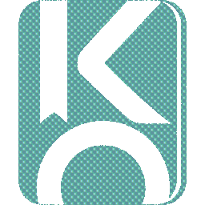
KOREADERКОРИСНИЧКО УПУТСТВО
26.11
Тренутно читате српску верзију KOReader корисничког упутства. Упутство имамо и осталим језицима, на које су га превели волонтери:
- Català (каталонски)
- Čeština (чешки)
- Español (шпански)
- Français (француски)
- Gaeilge (ирски)
- Italiano (италијански)
- Lietuvių (литвански)
- Nederlands (холандски)
- Português Brasil (бразилски португалски)
- Português Portugal (португалски)
- Slovenčina (словачки)
- Slovenščina (словеначки)
- Tiếng Việt (вијетнамски)
- Български (бугарски)
- српски (српски)
- Українська (украјински)
- العربية (арапски)
- தமிழ் (тамил)
- 简体中文 (поједн. кинески)
- 繁體中文 (трад. кинески)
Ако желите да видите напредак превода и/или да дате свој допринос у раду на превођењу корисничког упутства, молимо вас да посетите Weblate страницу превода нашег пројекта.

Ово упутство је првенствено дизајнирано за екране у боји. Посебно ако га користите по први пут, снажно вам препоручујемо да га читате на компјутеру, таблету или мобилном, уместо на црно-белом e-ink екрану. Биће вам много лакше да научите како да користите KOReader ако различите категорије текста видите на прави начин. Наравно, такође можете да читате и на свом e-ink уређају, али искуство неће бити оптимално.
Да бисте пронашли одређену тему или кључну реч, можете да употребите функцију претраге свог интернет прегледача (углавном Ctrl + F). Ако имате сугестију, исправку или питање у вези са овим корисничким упутством, можете да пишете на овај GitHub низ дискусије.
Ово упутство су написали
и проверили људи
KOReader кориснички интерфејс (сива поља) ОВе ставке се увек односе на делове програма KOReader. То може бити нешто на екрану што можете да тапнете/изаберете/поставите или нека функционалност апликације: Статусна линија Тежина фонта |
Путање менија (зелена) Ово су локације подешавања и ставки менија у KOReader систему менија: |
Спољне апликације и сервиси (љубичаста) Ово су сервиси и апликације које функционишу са програмом KOReader. Они су означени другачијом бојом јер желимо истаћи да они нису део KOReader пројекта, тако да нису под нашом контролом: Calibre, Readwise, KoHighlights… |
Интерни линкови (тиркизна) Ови линкови, са иконом кућице на крају, вас воде на остале делове овог упутства: Гестикулације |
Спољни линкови (плава) Ово су обични линкови који воде ван овог упутства: Пројекат Гутенберг |
У упутству такође користимо и различита поља и ознаке којима вас информишемо или упозоравамо:
Ја сам ознака НАПРЕДНО. Ако ме видите у наслову, то значи да је, у зависности од процедуре, потребно да поседујете одређени степен техничког знања, као што је рад са фајл системом, познавање CSS, инсталација спољних фајлова итд.
Ове звездице на менију навигације приказују одељке који су додати након последњег ажурирања упутства. Такође, два дугмета у углу странице са истим звездицама вам омогућавају да директно скачете по овим новододатим одељцима. Имајте на уму да навигационе звездице не покривају све додатке, најмањи наслови су изузети да би се спречило претрпавање. Али све што је додато можете да видите употребом дугмића у угловима.
KOReader развијају и подржавају волонтери из целог света. И ви можете да будете део овог пројекта:
- Исправљањем багова и имплементирањем нових функција
- Превођењем програма на свој језик или унапређивањем постојећег превода
- помагањем другима својим знањем на форумима или на GitHub проблемима и дискусијама
Погледајте одељак ОБРАТИТЕ НАМ СЕ за линкове.
- koreader.rocks: Наш званични домен који би тренутно требало да видите у адресној линији вашег интернет прегледача. Остали домени, укључујући koreader.com, НИСМО МИ!
- KOReader GitHub страница: Овде можете да преузмете званична издања за све оперативне системе и уређаје.
- F-Droid издање: Android верзија програма KOReader коју ми обезбеђујемо. Не постоји Play Store верзија апликације KOReader!
Упркос свом минималистичком изгледу, KOReader је веома моћна и прилагодљива апликација. Овај одељак личи на садржај који је оријентисан на практичну употребу. Тако да ако сте нови корисник, ово је право место за почетак. Овде ћете открити шта све KOReader може и научићете како да то урадите следећи линкове.
- Режим USB масовно складиште на уређајима који то подржавају Пренос књига на ваш читач
- Складиште на облаку (Dropbox/FTP/Webdav) са одговарајућим налозима Пренос књига на ваш читач
- KOReader може да служи као SSH сервер, па можете да употребите SFTP апликацију или менаџер фајлова за директни пренос фајлова Листа интерних додатака
- Са Calibre додатком можете да из Calibre библиотеке шаљете књиге директно на KOReader уређаје преко бежичне мреже Пренос књига на ваш читач
- Приступ јавним OPDS (Open Publication Distribution System) каталозима, или употреба сопствених сервера за приступ вашој библиотеци Употреба OPDS каталога
- Додатком за преузимање вести можете на свој уређај да преузимате RSS и Atom ставке вести као HTML фајлове Листа интерних додатака
- Са Wallabag додатком можете да преузимате чланке са свог Wallabag налога (сервис читај-касније заснован на серверу као што је Pocket) Пренос књига на ваш читач
- Промените фонтове (укључујући сопствене), величину фонта, контраст, тежину, кернинг, размак између речи, размак између слова у речи, поравнање текста, проред, распоред колона, маргине… ФОРМАТИРАЊЕ ВАШЕ Е-КЊИГЕ
- Употреба додатака за брзо читање као што је Проширивач перцепције и FastReader (RSVP) који помажу да убрзате читање ПОБОЉШАЊА ЧИТАЊА
- Користите испоручена моћна дотеривања стила или да напишете сопствена којима прецизно мењате начин на који се исцртавају ваше књиге Дотеривања стила
- Ручно или аутоматски инвертујете екранске боје за ноћни режим Аутоматска топлина и ноћни режим
- Аутоматски подесите топлину боје предњег осветљења Аутоматска топлина и ноћни режим
- Истичите текст различитим стиловима и бојама, постављајте маркереМАРКЕРИ, ИСТИЦАЊА И БЕЛЕШКЕ
- Режим двоструког тапа за академска/дужа истицања Режими истицања у програму KOReader
- Додајте белешке употребом прилагодљиве тастатуре која садржи модификаторе дијакритика Употреба тастатуре и савети
- Правите слике екрана Предефинисане гестикулације
- Пратите статистику читања која укључује погледе напредак читања, временски опсег и календар
- Извозите своје белешке и истицања на уређај као текст, markdown, HTML, JSON или Kindle clippings формат Извоз истицања
- Синхронизујте са сервисима на мрежи као што су Joplin, Readwise, Memos, Flomo и XMNote Извоз истицања
- Моћни Прегледач фајлова где можете да копирате, премештате креирате, бришете и мењате име фајловима и фолдерима и вршите пакетне операције Употреба прегледача фајлова
- Приказујете своју библиотеку онако као желите, у многим детаљним и мозаик погледима Употреба прегледача фајлова
- Додајете књиге у Омиљено да бисте им брзо приступили, или креирате сопствене Збирке са сортирањем и филтрирањем Колекције
- Виџет за прелетање којим се брзо скаче по страницама, поглављима, маркерима Виџет за прелетање
- Јединствена Мапа књиге која приказује поглед на књигу из птичије перспективе, заједно са свим вашим белешкама и истицањима Мапа књиге
- Прегледач страница којим се кроз странице крећете као по кадровима на филмској траци Прегледач страница
- Прегледач маркера којим се једноставно крећете по истицањима и белешкама МАРКЕРИ, ИСТИЦАЊА И БЕЛЕШКЕ
- Аутоматски или ручно креирајте алтернативне садржаје ако вам се не свиђају они који се налазе у књизи Алати за садржај
- Сакријте и искључите одређене делове књиге као што су Додатак, Индекс, Референце итд. и имаћете прецизније бројање страница Изузимање одељака: Произвољни скривени токови
- Моћан систем гестикулација са 200+ акција вам омогућава да тапом или превлачењем контролишете сваки детаљ програма KOReader Категорије гестикулација
- Ако имате тастатуру (интерну, жичану или bluetooth), овим акцијама можете да доделите и пречице на тастатури Пречице на тастатури
- Или креирајте мени са својим омиљеним акцијама помоћу Брзог менија и приступите им тапом или превлачењем Брзи мени
- Креирајте Профиле којима контролишете сваки детаљ програма KOReader и аутоматизујте акције Профили
- Претражујте документ одабирањем или уносом текста (укључујући регуларне изразе)
- Претражујте по маркерима, истицањима и белешкама
- Дугим тапом потражите текст у Википедији или у инсталираним речницима и преведите га
- Преводите делове текста или целу страницу између више од 130 језика
- Дискутујте о тексту, преводите или објашњавајте текст користећи локалне AI моделе или оне на мрежи (након инсталирања додатака) Типови додатака
- KOReader може сам себе да ажурира Савети за уређај
- Затамните или искључите екранско светло након постављеног интервала
- Поставите интервале освежавања странице за различите услове читања Подешавање интервала освежавања странице
- Поставите сопствени екран спавања користећи разне опције као што су случајне слике, омот књиге, читање, напредак читања, па чак и снимак екрана са сликом из књиге.
- Поставите аларме ограничења пуњења батерије да спречите дубоко пражњење/препуњење Савети за уређај
- Поставите упозорење о искоришћењу меморије (корисно за уређаје са мањом меморијом) и по жељи поново покрените KOReader када се достигне то ограничење Савети за уређај
- Опсеците маргине аутоматски или ручно
- Пресложите документе да издвојите текст и да лакше читате на малом екрану
- Примените OCR на документе без текст слојева, као што су скениране старе књиге OCR (Optical Character Recognition)
- Различити типови зумирања и смерови тока странице омогућавају лакше читање докумената у више колона, као што су научни чланци Читање великих PDF докумената на малом екрану
- Аутоматски исправите накривљене документе, као што су старе скениране књиге Ставке менија на дну специфичне за PDF
- Сачувајте своја истицања директно у PDF-ове, па ћете тако моћи да их видите и без KOReader-а Чување истицања у PDF
- Увезите истицања из PDF-ова и извезите их у многе друге формате Увоз PDF истицања
- Специјална Панел зум функционалност за читање манги Функционалност панел зума
- Прилагодљива подешавања освежавања екрана за савршену равнотежу између „духова” и брзине Подешавање интервала освежавања странице
- Додајте књигама сопствена дотеривања CSS стила Дотеривања стила
- Систем корисничких закрпа који вам омогућава да мењате основна понашања програма KOReader Корисничке закрпе
- Креирајте QR кôд из клипборда да делите текст и линкове на друге уређаје
- Приказујте HTML изворни кôд EPUB документа
- Креирајте и уређујте текст фајлове на уређају
- Отворите емулатор терминала и извршавајте команде на уређају
- Погледајте статистике коришћења CPU, меморије и батерије
KOReader подржава PDF/PDB/XPS, EPUB/MOBI/FB2, DJVU, CBR/CBT/CBZ, DOCX/RTF, HTML/HTMLZ, TXT/MD и CHM фајлове. Такође може да отвори ZIP архиве и да прикаже фајлове слика.
Постоји много начина да пренесете документе на уређај. Имајте на уму да ћете морати поново да покренете програм KOReader како би индексирао пренесене документе (или да освежите директоријум ако имате Pocketbook/Android).
Уз пренос фајлова на исти начин на који то радите апликацијом за читање уграђеном у читач, у зависности од уређаја, постоје и друге опције:
- Режим USB масовног складишта унутар програма KOReader: овај режим је доступан за KOBO и неке CERVANTES уређаје.
- Складиште у облаку (Dropbox/FTP/Webdav): да бисте користили ову функцију, морате да у менију приказаном испод додате налоге за сервер складишта у облаку. Процес је објашњен у инфо дугмадима у менију током додавања налога:
- SSH/SFTP приступ: KOReader може да се понаша као SSH сервер, па можете са компјутера да му приступите и да преносите фајлове (доступно на Kobo, Kindle, Cervantes). Можете да употребите SFTP апликацију (као што је Filezilla), или у случају да оперативни систем који користите то подржава, приступите из менаџера фајлова. На нашем викију се налази упутство како то да урадите, а погледајте такође и оквир упозорења испод.
- Calibre трансфер: уз помоћ Calibre додатка можете да шаљете документе из Calibre библиотеке директно на KOReader уређаје преко wifi мреже. На нашем викију се налази упутство како се то ради.
- Преузимач вести: овим додатком можете да преузмете RSS и Atom ставке вести као HTML фајлове. На викију се налази упутство како се то ради.
- OPDS (Open Publication Distribution System) каталози: Можете да приступите јавним каталозима или да користите сопствене сервере за приступ својој библиотеци. Више о томе: Употреба OPDS каталога
- Wallabag: овим додатком можете да преузмете чланке са Wallabag, сервиса за накнадно читање базираног на серверу који личи на Pocket. За више информација, погледајте вики страницу.
За приступ књигама постоје следеће методе:
- Прегледач фајлова - овде се налази посебни одељак: Употреба Прегледача фајлова
- Омиљено - листа на коју можете да додате књиге дугим притиском на њих у Прегледачу фајлова
- Историја - листа књига које сте отворили
- Збирке - персонализоване листе књига које ви креирате. Посебан одељак се налази овде: Збирке
Начин на који се приказују ови екрани можете да промените из:
Ако желите да промените број ставки које се виде на овим екранима, погледајте овде:
За сваки од ових дијалога можете да подесите гестикулације. На пример, док читате књигу, Историји или Омиљеним можете да приступите гестикулацијом, па да отворите другу књигу без потребе да идете кроз Прегледач фајлова.
Из горњег левог дугмета хамбургер менија можете да претражите књигу у екрану Историја по имену фајла или метаподацима књиге.
Такође можете подесити да KOReader приликом покретања уместо екрана Прегледач фајлова отвори екран Омиљено или Историја преко:
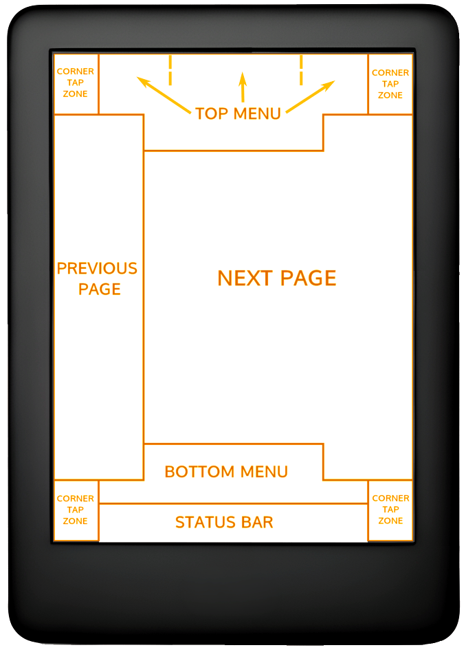
На горњој слици можете да видите подразумеване тап зоне програма KOReader. Ако желите да се прикаже мени на врху или мени на дну можете да тапнете наведене зоне. Такође можете и да превучете наниже по горњој зони ако желите да се прикаже мени на врху. На уређајима који немају екран осетљив на додир, као што је Kindle 4, мени на дну можете да отворите притиском на дугме које одговара акцији ЕНТЕР/OK.
Ако желите да се оба менија отварају у исто време, следећим менијем можете поставити да зона менија на врху истовремено отвара и мени на врху и мени на дну:
Тап зоне у угловима могу да се користе за више различитих типова гестикулација укључујући ТАП, ДВОСТРУКИ ТАП, ТАП СА ДВА ПРСТА и ТАП и ЗАДРЖАВАЊЕ.
Зоне ПРЕТХОДНА СТРАНИЦА и НАРЕДНА СТРАНИЦА такође истовремено могу да се користе за ДВОСТРУКИ ТАП гестикулације.
Зона Статусне линије може да се тапне тако да се, када је видљива само једна ставка, кружи по ставкама статусне линије. Ако су видљиве све ставке, тапови ће да прикажу и сакрију статусну линију.
Ово је само неколико брзих подешавања за почетак. Молимо вас да прочитате одељак ФОРМАТИРАЊЕ ВАШЕ Е-КЊИГЕ упутства за детаљни водич. Овде можете да научите више о Менију на дну, који се углавном користи за подешавање текста: Ставке менија на дну
| Измена фонта* | |
| Подесите величину текста | |
| Потамните текст | |
| Инвертујете боје на екрану (бели текст на црном) |
Осветљење екрана можете да контролишете из овог менија. Ако имате топло осветљење (обичне беле LED диоде + наранџасте), можете одвојено да их контролишете из овог дијалога. За овај дијалог можете да дефинишете и гестикулацију:
Као екран спавања, из следећег менија можете да изаберете омот књиге или произвољну слику:
Као позадину екрана можете да користите JPG/PNG фајлове (најбоље изгледају исправно дитероване слике у тоновима сиве). Пренесите фајлове са компјутера у било који фолдер на уређају. Па из следећег менија изаберите тај фолдер као фолдер за тапет екрана спавања:
Молимо вас да погледате следећи пост на Mobileread форуму у вези са напредним информацијама о припреми слика за екран спавања.
Ако тражите информације у вези са пречицама на тастатури, кликните овде да скочите на тај одељак. Овај наслов објашњава само употребу тастатуре.
- Тап ван поља за унос затвара тастатуру, тап у поље за унос поново приказује тастатуру
- Превуците навише тастере да унесете то велико слово (или мало ако се већ налазите у шифт режиму)
- Можете да измените изглед тастатуре:
- Можете да изаберете више од једног распореда:
- По изабраним распоредима се крећете тако што тапнете на икону у тастатури
Koreader тастатура омогућава унос додатних карактера када тапнете и задржите тастер. Испод су приказани додатни карактери који се најчешће користе. Да бисте добили суседне карактере можете да тапнете и задржите тастер у сивом пољу:
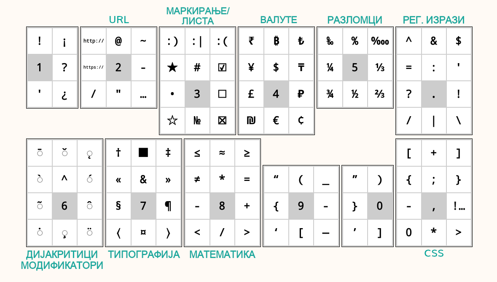
Уз искачући прозор који се добија дугим притиском, ове додатне карактере можете да унесете и превлачењем по тастеру. У примеру испод, можете да превучете навише тастер a када желите да унесете велико А, или да превучете у било ком другом смеру да унесете приказане карактере. Запазите да доњи пример приказује комплетан искачући прозор само да би било јасније објашњење. Нема потребе да отварате овај прозор, можете директно да превлачите по тастерима. Једном када се навикнете на локације додатних карактера, на овај начин ћете бити у стању да их уносите много брже.
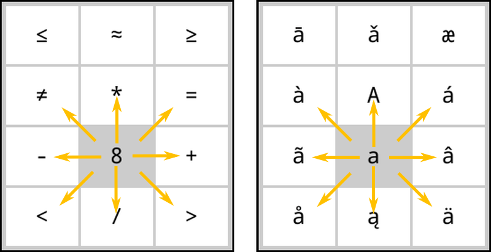
Ако ова функција прави сметње у начину на који користите програм, можете да је искључите тако што уклоните штиклирање са:
Такође постоје још неке пречице које олакшавају манипулацију текста. Следеће тастере можете да тапнете и задржите и извршите следеће акције:
- Лева стрелица - помера курсор на почетак линије
- Десна стрелица - помера курсора на крај линије
Такође, тастер брисања уназад се другачије понаша када на њему извршавате гестикулације превлачења:
- Тап: брише карактер
- Дуги притисак: брише се цела линија
- Превлачење улево: брише се део речи лево од курсора
- Превлачење навише: брише се цела реч
За више информација, погледајте одговарајућу вики страницу.
KOReader такође интегрише кинеску тастатуру потеза којом се уносе упрошћени и традиционални кинески карактери. Више информација о томе можете да пронађете у нашем викију.
Овај додатак вам омогућава да подесите топлину предњег светла на уређајима са природним (жутим/наранџастим) светлом и да аутоматски подесите ноћни режим (инвертоване боје на екрану – бели текст на црној позадини), сагласно са распоредом. Може оба да контролише, или можете да изаберете режим само контрола топлине или само контрола ноћног режима, па да оно друго контролишете ручно.
Када инсталирате KOReader, овај додатак се испоручује подразумевано укључен. Ако се из неког разлога не налази у менију, можете да га укључите овде:
Топлину предњег светла екрана можете аутоматски да подесите на два различита начина:
Фиксни распоред: у овом режиму се топлина предњег светла мења према дневном распореду који унесете. Овај режим је статички, не узима у обзир трајање обданице. Распоред остаје исти током целе године.
Позиција Сунца: ова опција израчунава позицију Сунца на вашој локацији сагласно са информацијама о координатама и надморској висини које унесете. Топлина предњег светла се постепено мења у сагласности са овим израчунатим подацима о положају Сунца. Овај режим је динамичан. Пошто се трајање обданице мења током године, додатак аутоматски коригује распоред сагласно са трајањем обданице.
Најпре погледајте следећу слику да се упознате са појмовима који се користе у додатку:
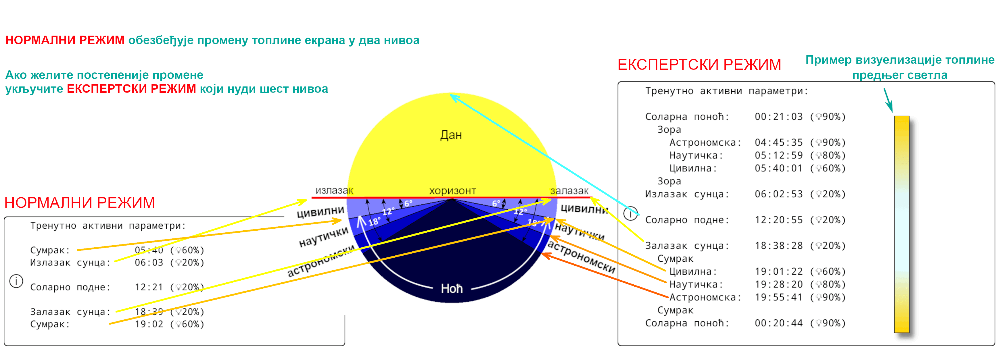
- Идите на мени додатка:
- Запамтите на ставку менија Активирај, па тапните на Сагласно са фиксним распоредом
- Вратите се назад на претходни мени и тапните на ставку менија Подешавања фиксног распореда
- Поставите свој распоред времена преласка уносом времена у разне ставке приказане овде. За објашњење ставки, погледајте горњу слику.
- Идите на мени додатка:
- Тапните на ставку менија Активирај па онда тапните на Сагласно са позицијом Сунца
- Вратите се на претходни мени и тапните на ставку Подешавања локације. Поставите исправно координате локације (обавезно) и надморску висину (није обавезно) и наведите име своје локације.
- Вратите се назад на претходни мени и тапните на ставку менија Подешавања топлине и ноћног режима
- Поставите свој распоред времена преласка уносом времена у разне ставке приказане овде. За објашњење ставки, погледајте горњу слику.
Тренутни распоред можете да видите из опције менија Тренутно активни параметри.
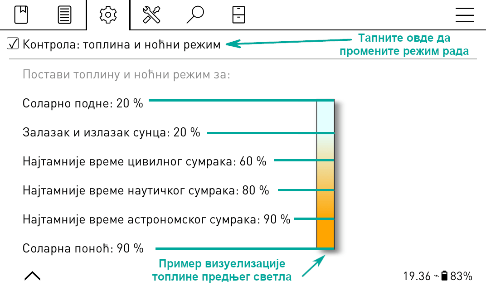
Док постављате проценат топлог светла за различите интервале, за тај интервал такође можете да укључите и Ноћни режим, чиме се инвертују боје на екрану када почне тај интервал. Ако је минимално предње светло још увек превише јако, или ако вам више одговара тамна позадина странице, активирајте ову функцију. Да бисте то урадили, тапните на поље за штиклирање Ноћни режим и тапните Постави.
Када то урадите, у менију ће се поред овог интервала појавити икона месеца. Ако желите да искључите ноћни режим, једноставно уклоните ознаку штиклирања Ноћни режим у том интервалу.
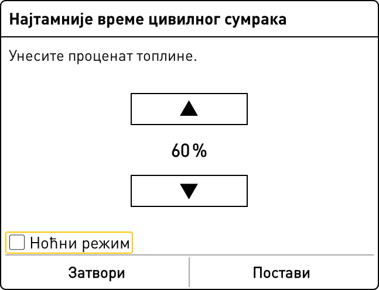
Ова функција укључује предње светло приликом заласка сунца и искључује га приликом изласка сунца сагласно са Тренутно активним параметрима у додатку. Ово можете да преиначите тако што ручно укључите/искључите предње светло. Приликом наредног изласка/заласка сунца, AutoWarmth ће поново изменити стање ако је то потребно. Можете да га активирате тако што у менију овог додатка изаберете ставку Предње светло је искључено током дана.
Ако желите да се уместо постепене измене топлина мења брзо:
- Поставите режим на Фиксни распоред следећи инструкције изнад
- Па поставите подешавања слично као на слици испод:
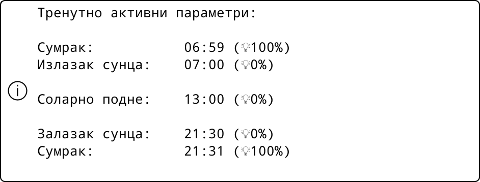
Као што можете видети у горњим подешавањима, разлика у времену преласка између дана и ноћи је само један минут. Тако да топлина екрана иде од 0 до 100 (или обратно) за време од само једног минута. Ово време раздвајања преласка можете да повећате и тако продужите транзицију.
KOReader поседује једноставан, углавном црно-бели кориснички интерфејс јер градијенти и различите нијансе сиве могу да изазову бљескање и појаву духова на e-ink екранима, а то квари уживање у читању.
KOReader има два главна интерфејса: екран читања и прегледач фајлова. Овде ћемо да објаснимо екран читања. Прегледач фајлова је објашњен у овом одељку корисничког упутства.
ЕКРАН ЧИТАЊА има два менија:
- У МЕНИЈУ НА ВРХУ се налазе ставке које се тичу опште употребе KOReader читача. Одавде ћете имати приступ књигама, подешавањима програма KOReader, додацима итд.
- МЕНИ НА ДНУ се концентрише на опције за форматирање документа као што су тежина/величина фонта, проред итд. Док подешавате изглед текста, углавном ћете радити у МЕНИЈУ НА ДНУ.
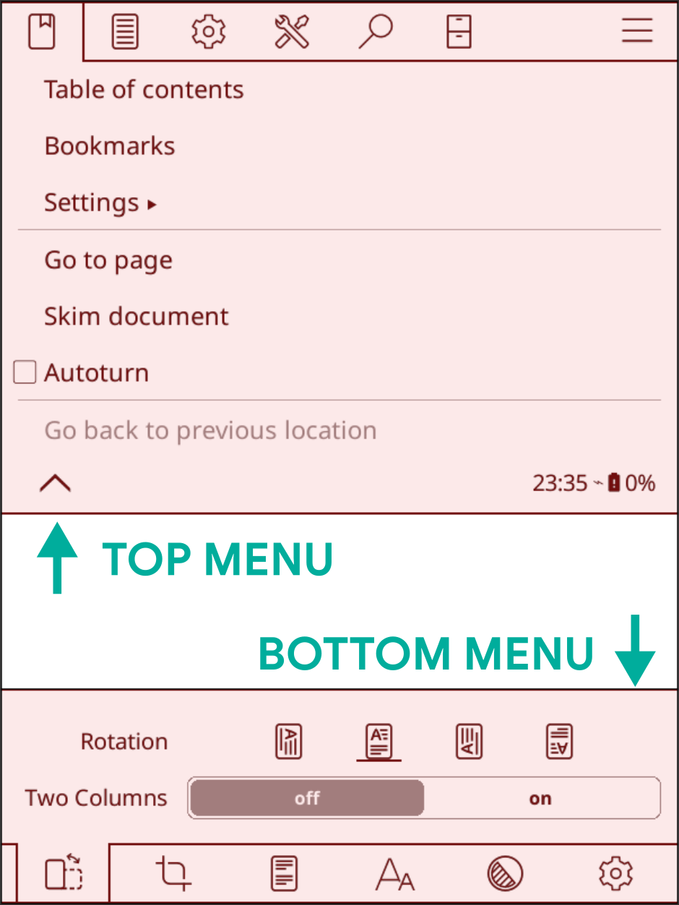
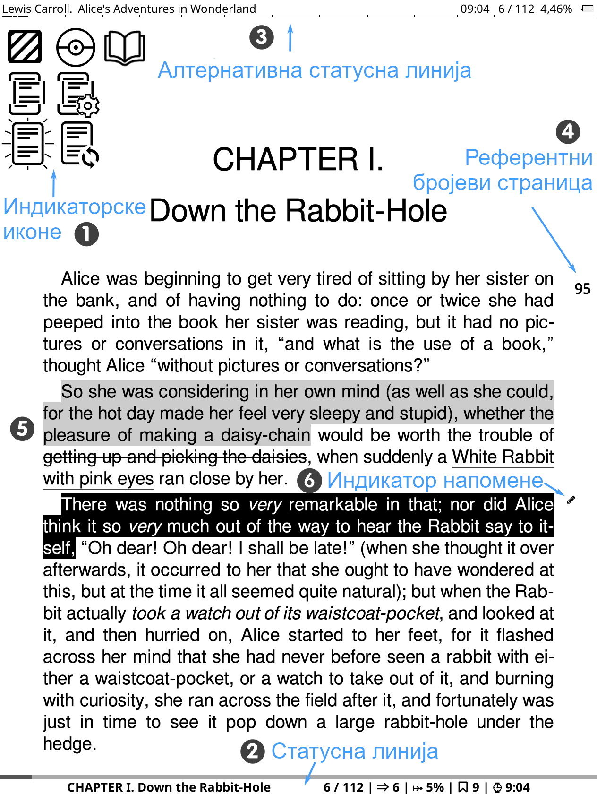
Слика изнад приказује елементе које можете видети на екрану читања док читате књигу:
- Индикаторске иконе: ове иконе вас обавештавају о стањима и о одређеним процесима који се извршавају. Видећете их у горњем левом углу екрана док се извршавају одређене операције. Обично су мање, али их овде приказујемо увећане да би биле јасније. Наредни одељак детаљно објашњава ове индикаторске иконе: Индикаторске иконе
- Статусна линија: ово је област која може детаљно да се подеси и у којој можете да видите разне информације у вези са књигом и KOReader читачем. Кликните овде да скочите на одељак: Статусна линија
- Алтернативна статусна линија: поред подразумеване Статусне линије, имамо и Алт статусну линију која се појављује на врху странице када је укључите. Кликните овде да сазнате детаље: Статусна линија
- Бројеви страница издавача: ако је издавач ваше књиге уметнуо бројеве страница из штампане верзије књиге, видећете их на следећи начин. Кликните овде за више информација о бројевима страница издавача: Нумерисање страница
- Типови истицања: овде можете видети различите типове истицања. Ако ваш уређај има одговарајући екран, можете да направите ми обојена истицања. Кликните овде да скочите на одељак: Маркери, истицања и белешке
- Маркер белешке: икона маркера белешке се појављује када истицању додате белешку. Постоје различити типови маркера белешки. Кликните овде за више информација: Маркери, истицања и белешке
KOReader има одређене индикаторе који вас обавештавају о стањима и одређеним процесима који се извршавају, као што можете видети на слици изнад. Видећете их у горњем левом углу екрана током одређених операција.
Иконе делимичног исцртавања ова група икона припада процедури делимичног исцртавања и вероватно ћете је виђати чешће него остале. Ове иконе видите када промените подешавања у менију на дну. Ова функционалност вам омогућава да много брже видите измене подешавања изгледа текста тако што уместо целе књиге исцртава само текуће поглавље. Захваљујући њој, и ротација оријентације екрана је сада много бржа. Ова функционалност је подразумевано УКЉУЧЕНА . Ако желите, можете да је искључите за одређену књигу (тапом), или глобално (дугим тапом) на: Када потврдите измене, комплетна књига мора да се поново исцрта, тако да је ово процедура у више корака. Следеће иконе приказују корак исцртавања, као што је приказано испод: |
У овом кораку, документ је делимично исцртан. Број страница, информације у подножју и многе друге ствари нису прецизне. Можете да видите како изгледа ново подешавање и да наставите са подешавањима. У овом стању такође можете да окрећете странице, скачете на линкове. |
|
Потпуно исцртавање се дешава у позадини. Још увек можете да окрећете странице, следите линкове, мењате подешавања. |
|
Комплетно исцртавање је завршено, али још увек није примењено јер KOReader чека да не радите ништа како би могао поново да учита остатак књиге (не радите ништа=не дирате уређај). Још увек можете да окрећете странице, следите линкове, мењате подешавања. |
|
Нисте додиривали уређај неко време, тако да KOReader сада поново учитава комплетан документ. У овом кораку KOReader је блокиран да би се спречила интеракција. |
Икона истицања ова икона се приказује када се налазите у режиму избора и истицања. KOReader има додатни режим истицања који вам омогућава да започнете истицање и окрећете странице, па тако можете да направите дугачка истицања која могу да се простиру на више страница. О томе можете да читате у одељку МАРКЕРИ, ИСТИЦАЊА И БЕЛЕШКЕ овог упутства. Када у овом режиму започнете истицање, у углу се приказује икона која вас подсећа да се још увек налазите у режиму истицања. Она нестаје када завршите истицање избором краја пасажа или када откажете истицање (поновним тапом на почетак истицања, или на ову икону истицања). |
Икона Покемон лопте ова икона се појављује када извршите дуги притисак на реч (намерно или случајно). KOReader има нормални мени дугог притиска. Постоји и додатни мени веома дугачког притиска, када прст држите дуже од 3 секунде. Ова икона означава да сте активирали овај мени веома дугачког притиска. |
Икона изврнутог режима ова икона се приказује када тапнете горњи леви угао ако:
Овај режим привремено приказује комплетну страницу без опсецања, скалирану тако да стане на екран. У овом режиму можете да окрећете странице. Ако желите да та напустите, тапните на ову икону. |
KOReader поседује две статусне линије, Доњу статусну линију која је подразумевано укључена. А има и Алт статусну линију која се појављује на вргу странице ако је укључите. Ова Алт статусна линија је доступна само за документе коју могу да се пресложе (epub, html, docx, rtf, txt…).
Доња статусна линија је новија и она се активно одржава. Алт статусна линија је остатак из ранијих верзија KOReader читача тако да у њу не додајемо нове функционалности. Али још увек можете да укључите Алт статусну линију ако вам је корисна. Можете да је укључите из:
Алт статусну линију можете да подесите из следећег менија:
Упутства у остатку овог одељка су за Доњу статусну линију.
Трака напретка у статусној линији обично приказује ваш напредак читања кроз целу књигу. Али уместо тога, она може да прикаже и напредак читања кроз текуће поглавље. На пример, ово може бити корисно ако књига има много кратких поглавља. У том случају се тешко може пратити напредак читања кроз текуће поглавље, тако да статусна линија поглавља даје корисније информације. Функционалност можете да укључите из следећег менија:
За пребацивање између обичне и траке напретка поглавља можете да доделите и гестикулацију. Ову акцију ћете пронаћи под:
Доњу статусну линију можете да подесите из овог менија. Слободно истражите подмени ПОДЕШАВАЊА и прилагодите статусну линију по вашој жељи.
Постоји много ставки које могу да се прикажу на статусној линији. Али подразумевано се истовремено приказује само једна, и морате да тапнете на статусну линију да бисте кружили по осталима. Ако желите да се све ставке прикажу истовремено, укључите то овде:
Сортирање ставки статусне линије:
Овде можете да промените фонт ставки статусне линије:
You can use all your installed fonts for the status bar. If you want to fit lots of information, we can suggest DINish Condensed font, which you can download from its project page and install using the same procedure which you can find here: Using your own fonts
KOReader's status bar has a special item called dynamic filler. When you add this invisible item to your status bar, it will expand to fill the available space like an inflated balloon, pushing other items on both sides as you can see in the image below (dynamic filler is visualized as a blue rectangle):
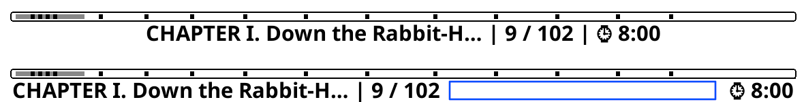
You can enable and move this item like the other status bar items from the same menu. You can also combine this item with the custom text item explained below to adjust your layout further.
Постоји специјална ставка статусне линије под именом Произвољни текст. Ова ставка вам у статусној линији приказује произвољно унети текст. Такође је можете употребити и да креирате граничник између ставки статусне линије, као што се види у примеру испод:
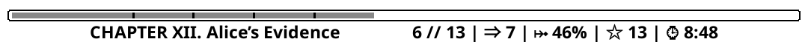
- Најпре је укључите кратким притиском на следеће
- Затим поново извршите дуги притисак на њу да се отворе подешавања. Унесите карактер „размак” у прво поље, па затим унесите број понављања у друго поље, чиме се одређује ширина граничника.
Као граничник можете да изаберете и неки други карактер. Ову ставку такође можете да померате као и остале ставке статусне линије, и тако подесите своје групе.
You can also use this item in combination with the dynamic filler item explained above to adjust your layout further.
KOReader allows you to have more than one status bar layout and switch between them. Using this feature, you can have different layouts for cases like these examples:
- A layout showing more items when using wider landscape orientation
- A layout with the chapter name item when reading specific books
- A layout with memory usage item when reading large comics to keep an eye on your memory
To create a preset, first adjust your status bar to your liking by adding and ordering items (as explained before in this section). Then select:
This will create a preset with your current status bar layout. Repeat this for other layouts that you want to create. After this, you can switch between your new layouts from the same menu. You can also use gestures, profiles and quick menu to quickly switch between your status bar presets.
External content is a special status bar item that allows KOReader plugins to show content in the status bar. For example Read Timer plugin uses this item to show the timer in the status bar. Currently you don't need to enable it manually but you can find it here:
Да бисте се упознали са менијем, овде ћемо навести само преглед ставки у структури менија на врху. Детаљне информације се налазе у одговарајућим одељцима овог упутства.
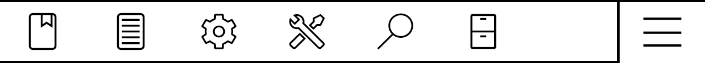
- NAVIGATION This menu contains items that allows you to navigate the book you are currently reading. Table of contents, bookmarks, book map...
- TYPESETTING This menu contains items that allows you to change the appearance of your book. Font settings, style tweaks...
- SETTINGS This menu contains settings for KOReader and your device. E-ink, light, gesture settings...
- TOOLS This menu contains plugins that can expand the functionality of KOReader.
- SEARCH This menu contains items related to search and lookup. Text search, dictionary, translation, Wikipedia...
- FILE BROWSER This button opens the file browser which is the interface for managing your library.
- MAIN This menu contains tools for accessing your books like history, favorites, collections. Also book information, update and exit items are under this menu.
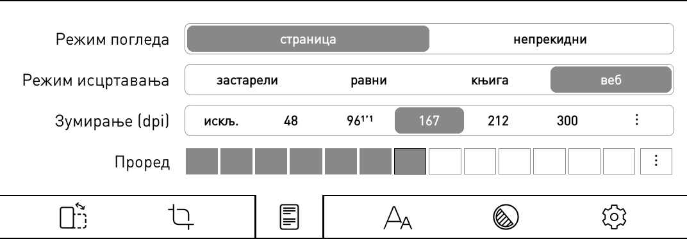
View mode If you change to continuous mode you can scroll the document like a web page. This mode is more suitable for non e-ink screen types (LCD, OLED). In continuous mode you lose top and bottom margins so text may be cut on the first and last line of screen. To solve this problem you can enable Page overlap:
Render mode option determines how your document is rendered by KOReader. Default is WEB and generally you don’t need to change this setting. When a book (or saved web page) is very complicated (specified widths or margins, negative margins, floats etc.) and layout looks bad or overflow the screen, you can try other rendering modes.
Zoom (dpi) setting can be thought of as a general zoom factor for the document (except font size). At 96 dpi (which is the default setting), images in the document are rendered at their original dimensions. Basically you will use this setting if you want to make images bigger without making the text bigger.
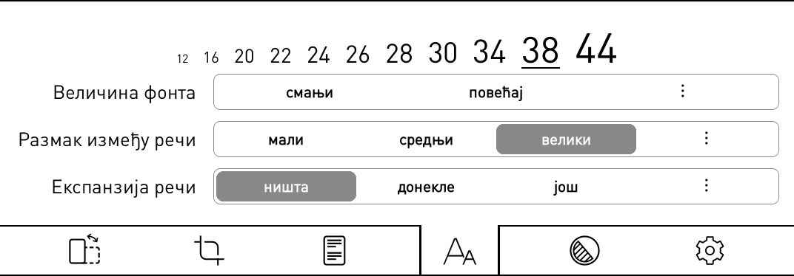
Размак између речи и Експанзија речи: ова два подешавања су у вези једно са другим и она одређују како ће ваш текст да изгледа када се обострано поравна. Када укључите обострано поравнање текста, између речи се додаје размак тако да се обе ивице сваке линије поравнају са левом и десном маргином. Пошто број речи у линијама није исти све време, при обостраном поравнању је потребно да се текст сабије или развуче тако да се испуни простор линије.
Word spacing How much the space characters in a line of text can be compressed to fit more words. This setting doesn’t affect words, it only changes the space between them.
Word expansion If you have too much white space in a line, how much of that can be distributed into the words by expanding them. This setting affects the appearance of words. If you don’t want your words to expand, set this to none.
Можете да експериментишете са различитим подешавањима све док вам текст не изгледа лепо, па да их затим у њиховим одговарајућим дијалозима поставите као подразумевана.
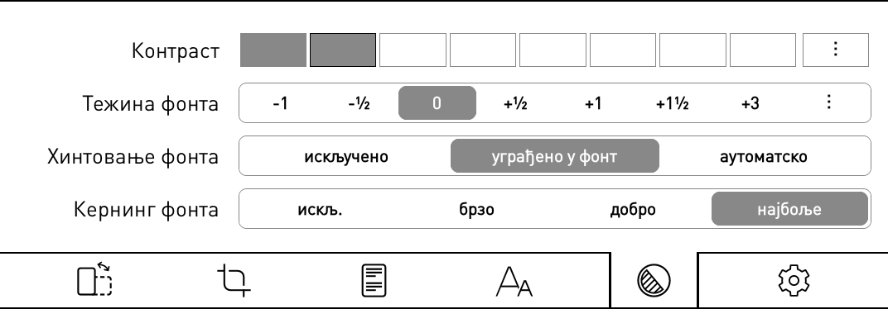
Контраст и Тежина фонта су две опције којима текст може постати тамнији (или светлији). Исти изглед можете постићи било којом од ове две опције, али оне користе различите методе да постигну ефекат. Наравно, обе можете да користите истовремено.
Укратко, разлике између њих су:
+ Не мења ширину фонта, дужина књиге остаје иста
+ Нема потребе да се документ поново исцрта, брже је
- Може лоше да изгледа на LCD или на екранима са малом DPI
+ Ако су инсталирани, употребиће се фонтови одговарајуће тежине
+ Боље изгледа на LCD или на екранима са малом DPI
- Потребно је да се фонтови поново исцртају, спорије је
Font kerning adjusts the spacing between letters to achieve a visually pleasing result. Default is best option, which might be slower when opening files (depending on your device) but has better support for ligatures (see the image below for an example), joined Arabic glyphs and some other scripts. If your device is slow, you can try good which is faster and may still look correct with western latin-script text.
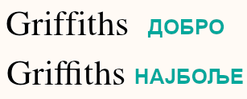
Font hinting is a typographical technique that adjusts the characters in a font to fit in a low-resolution grid, like an e-ink screen. When enabled, the result is sharper and easier to read characters, at the cost of slight distortion of the original font design.
Difference of font hinting is more visible on standard-resolution screens or at smaller font sizes. On a very high-resolution screen, the difference is much less noticeable because the pixels are small enough.
Here is a more detailed comparison:
Hinting OFF
|
Hinting ON
|
|
|
In KOReader, font hinting is enabled by default and uses the FreeType library's hinting algorithm instead of font's internal instructions (to be safe because font internal instructions might be broken). But you can try the font designer's instructions embedded in the font file to see if it looks better:
- Off Hinting is disabled.
- Native KOReader uses the font's internal hinting instructions.
- Auto (on by default) KOReader uses FreeType's hinting algorithm, ignoring font's internal hinting. Handles CJK text better.
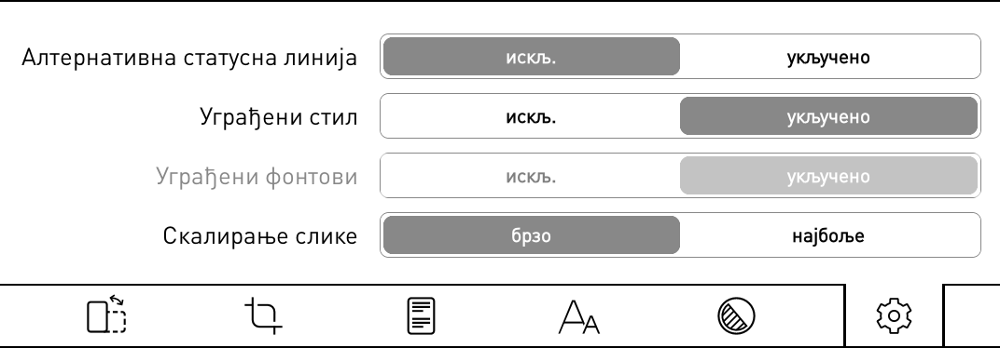
Алтернативна статусна линија укључује алтернативну статусну линију која је доступна само за типове докумената који могу да се пресложе (EPUB, HTML, DOCX, RTF, TXT…). Када се овде укључи, Алтернативну статусну линију можете да подесите из:
Уграђени стил и Уграђени фонтови одређују да ли ће се користити (или игнорисати) стилови издавача и фонтови уграђени у документ. Ово су општи прекидачи укључено/искључено. Финија дотеривања докумената можете да извршите из:
Скалирање слике одређује како се исцртавају слике у документу. најбоље изгледа лепше, али је спорије.
Кориснички интерфејс KOReader читача и опције могу да се промене у зависности од типа фајла који отворите. Постоје две главне категорије докумената:
- Документи фиксног распореда (pdf, djvu, фајлови слика…)
- Документи који могу да се пресложе (epub, html, docx, rtf, txt…).
KOReader има доста могућности, тако да систем његових менија осликава ту сложеност. Имамо функционалност Претрага менија којом се брзо проналазе ставке менија. Ако упамтите име ставке менија, али се не сећате где се она налази, употребите следећу функционалност:
За бржи приступ, ову функционалност можете да доделите гестикулацији или да је додате у свој Брзи мени.
Ако у менију на дну тапнете и задржите име опције, приказаће вам се објашњење те опције. |
|
Језик интерфејса можете да промените из: |
|
Ако желите да измените величину корисничког интерфејса, за то постоји DPI подешавање: Можете да изаберете вредност из менија или да изаберете Произвољна dpi и унесете вредност за фино подешавање: Виша DPI = Већи интерфејс. Приметите да у доњој линији постоји и подешавање Зумирање (dpi). Оно утиче само на документе. Објашњење се налази у наредном одељку. |
Ако тапнете и задржите опцију или ставку менија (тежину фонта, проред итд.), њену вредност можете да поставите као ПОДРАЗУМЕВАНУ. Нова вредност ће се применити само на књиге које се отворе након тог тренутка. Претходно отворене књиге задржавају своја подешавања. Подразумеване вредности можете да препознате по звездици (★) у менију, или као црни оквир око индикатора, као што је приказано испод: 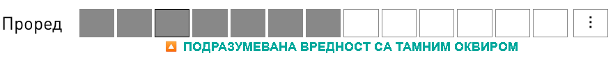 |
Дијалоге који покривају цео екран (Историја, Садржај, Статистика читања итд.) можете да затворите тако што превучете наниже. (Осим прозора Маркери. Да бисте га затворили можете да употребите било коју гестикулацију мултипревлачења) |
Снимак екрана можете да направите извођењем дугог дијагоналног превлачења прстом. Снимак екрана се такође прави и додиром на супротне дијагоналне углове. На пример, ову другу гестикулацију можете да употребите када гледате слику. Такође, ако ваш уређај има тастатуру, снимак екрана можете да направите и пречицом Alt + Shift + G. |
Ако желите да отворите насумично изабрану страницу књиге, имамо акцију Скок на насумично изабрану страницу коју можете да доделите било којој гестикулацији. Налази се у категорији Читач Управљача гестикулацијама. |
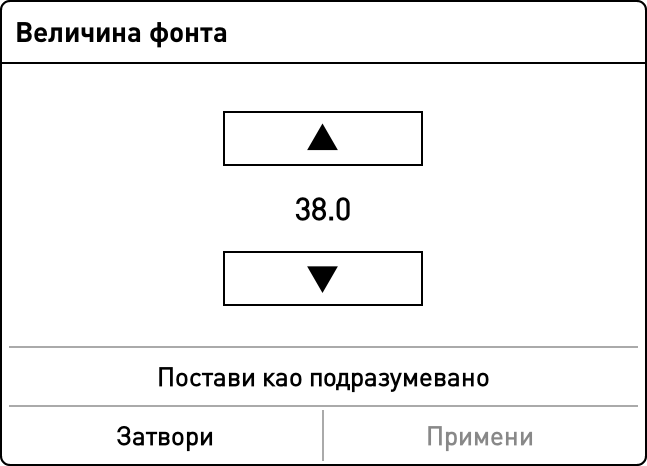 У дијалозима који садрже дугмиће са стрелицама за подешавања, као што су они приказани изнад, стрелицу можете да тапнете и задржите, па да вредност мењате у већим корацима. Овај тип дијалога (који не заузима цео екран) можете да затворите тако што тапнете ван прозора. Овај тип дијалога можете да преместите тако што задржите његов наслов прозора и превлачите. Овај тип дијалога можете да учините полупровидним тако што тапнете и задржите наслов прозора (онда када желите да видите текст испод њега док подешавате вредност). |
Креирање нових фолдера - У ситуацијама када је потребно да изаберете локацију (складиште у облаку, додатак премештања у архиву, додатак за извоз), KOReader вам приказује екран који изгледа као наш Прегледач фајлова. Ако током избора желите да креирате нови фолдер:
|
KOReader подржава претрагу речника у EPUB и скенираним PDF/DJVU документима. Да бисте видели дефиницију у речнику или превод, једноставно тапните и задржите реч. Притисак и задржавање на реч отвара дијалог у којем такође можете да претражите наредна појављивања избора у документу или да га потражите на Википедији. |
When viewing dictionary and wikipedia results, you can long-press on word(s) in these windows to search them further in the dictionary/wikipedia. This will open another window with the result, so you won't lose your previous search. If you have opened several search windows as described in the previous tip, you can close them all at once by long-pressing the close X button. |
Ако желите да видите текући датум, можете да тапнете на сат у МЕНИЈУ НА ВРХУ. |
KOReader има три врсте скроловања додиром. Можете да им приступите из:
- Класично скроловање: овај режим ради на потпуно исти начин као скроловање на телефону/таблету.
- Турбо скроловање: овај режим вам омогућава да скролујете брже у односу на класично скроловање. Такође можете да скролујете више страница без подизања прста. Количина скроловања је пропорционална растојању за које померите прст у односу на тачку из које сте започели скроловање.
- Скроловање при отпуштању: ова врста скроловања је погоднија за e-ink екране. За разлику од осталих типова скроловања, овај режим не освежава страницу непрестано док се скролује. Он ради као исто као и класично скроловање само што се не приказују међукораци. Тако да скролујете прстом, па када подигнете прст, страница скочи на ту позицију. Ово је посебно корисно да се репозиционира и подеси приказ када књига коју читате садржи слике или табеле, па желите да их видите у потпуности.
Ова корисна функција ради на исти начин као дугме Назад у интернет прегледачу. Када скочите на неки други део књиге употребомВиџета за прелетање, Листе маркера, Мапе књиге итд. KOReader памти вашу претходну локацију. Ово је корисно, на пример, ако следите интерни линк или референцу. Једним тапом можете да се вратите на место са којег сте скочили. Овој функцији приступате из:
Из истог менија, такође можете да идете и унапред. Ова функционалност је додељена гестикулацији мултипревлачења. Ако желите, можете ово да доделите некој другој гестикулацији (као што је тап у угао) или да је додате у свој Брзи мени.
KOReader обично извршава потпуно освежавање на страницама које садрже слике (што можете да приметите као бљесак црне). Разлог за то је да се отараси остатака и духова са претходне странице. Али у зависности од уређаја и ваших личних потреба, ово можда и није неопходно. Понашање аутоматског освежавања можете да искључите овде:
Ако вам смета, одавде можете да искључите трептање корисничког интерфејса:
After learning the basics of KOReader from the previous section, now you want to start reading probably. But before that, why not customize the appearance of your book to make it look really nice.
In this section, we will do a step-by-step "digital typesetting" to make your e-book look more like a printed book. Aim of this tutorial is to get you familiar with the KOReader's text appearance settings so you can change them according to your taste later.
Here are the steps:
- Get a nice font: First we need a font for our book which looks more like a printed book (and at the same time readable on an e-ink screen). If you have a favorite font, you can use that. Otherwise you can download one of our suggestions below. We have two fonts for different looks: serif and sans-serif (if you don't know what these mean, just click on the links to see the difference):
- If you like serif fonts, download Lusitana. This is an elegant classical serif typeface that is designed for reading long texts. You can download it from here.
- If you like sans-serif fonts, download Red Hat Text. This is a geometric sans typeface that prioritizes legibility. You can download it from here.
- Transfer the font to your device: If you don't know how, check this part of the guide and come back here after copying the font to your device: Using your own fonts. You should restart KOReader after transferring the font so it can add the font to the font list.
- Set your new font: Open your book and go to the menu you see below. Your newly added font should appear at the beginning of the font list. Select it:
- Disable Embedded Fonts: Now we have to disable this option by setting it to off so KOReader will use our selected font instead of the one included in the book. If the setting is grayed out so you can't change the setting, this means that there are no fonts embedded in this book so you can skip to the next step:
- Adjust Font size: Now we will adjust our font size. For Lusitana 22.0 is a nice size. For Red Hat Text you can go down to 20.0. However, this is a personal preference, so you can set it to whatever looks best to you. Set the font size here:
- Adjust Font weight: If you are using KOReader on an e-ink device, your text will look less black compared to the LCD/OLED screens. Generally fonts are not designed specifically for e-ink screens so we will fix this by making it darker with the Font weight setting. +1 is a good starting point. Some thin fonts might require +2. You can set it more precisely by tapping the three dots at the end of the setting line:
- Adjust Line spacing: Now we will adjust the Line spacing which determines the space between lines vertically. This setting varies between fonts depending on the character geometries. For Lusitana you can set it to 135 %. Red Hat Text with its more open characters, can afford a tighter 120 %. Set it here:
- Adjust Margins: At this point our text should look pretty nice. Now we will adjust the margins (empty white space around our text) as the last touch and finish our adjustments. Now open this menu and adjust the settings as you see below:
- L/R Margins: Set to level 7
- Top Margin: Set to level 6
- Bottom Margin: Set to level 6
After all these settings, your book should look more like a printed book. You can make further adjustments to these settings if you wish.
So after all these settings, you might ask "Will my other books look like this too?" No, not automatically. Because all these changes are valid only for the current book.
In other reader applications, when you change a setting, let's say the font used for books, it changes globally. Which means, if you change the default font to Verdana, any books you open after this change -including the ones that you are already reading- will be shown in this Verdana font.
KOReader's approach is different from this. We save appearance settings per book. This gives you the flexibility to change your settings for the current book without affecting others. For example if you have some fantasy books, you can change the font to a medieval looking one only for these books. Or you can set some books to open in landscape orientation or double column mode.
So this is how KOReader works:
- KOReader settings like font size, line spacing etc. have default values.
- If you open a new book, KOReader refers to these default values to set the appearance of your book.
- When you make changes in a book, like adjusting the text size, they affect only this specific book. Because your changes won't modify the default values, so newly opened books won't be affected.
- But you have the ability to save your changes as defaults and when you do this, they will be used for the newly opened books too.
Let's see on an example:
During this exercise, we increased the Font weight of our book to +1.00. Now open the Font weight menu and press the three dots at the end of the Font weight setting line. A dialog window will open and you will see this: Default value: +0.00. This means that when you open another book, its font weight will still be 0 (Default value), instead of +1 as we have set before.
So to make a setting permanent, you have to set it as default. There are two methods in KOReader for setting these default values:
- Setting individual settings as defaults
- Setting "all of the settings" as defaults at once
Settings in KOReader generally can be set as default with a long-press. Have a look at the screenshot below:
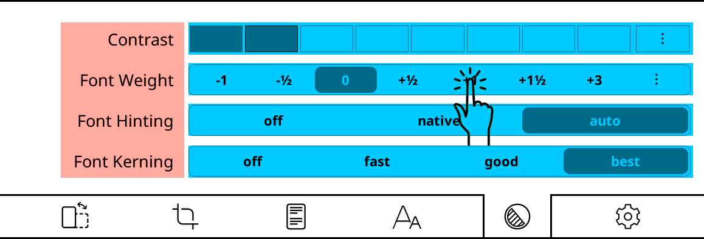
Values on the right side marked in blue can be long-pressed to set them as defaults. Let's say you want to make the text bolder. If you press on +1 normally, it will change only for this book. But if you long-press on it, you will see this dialog:
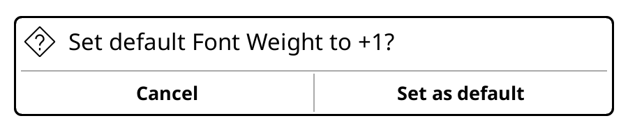
If you press the Set as default button, this book and the books that you will open in the future will have +1 font weight.
This "long-press to set as default" rule works in menus too. For example when changing the font from the top menu:
- short press = change the font only for this book
- long-press = change the font for this book and all the future books
Default values have a star (★) in the menu system or shown with a black border around the indicators as seen below:
Remember that, the books that you have already opened will keep their own settings. Changing defaults don't affect them.
You also have the ability to set all of the current book settings as defaults instead of one-by-one. This is useful if you make many changes to a book and you want all your books to look like this one.
You can save the current document settings as defaults by choosing:
This will overwrite all the settings with the current document's settings. So all the books that you will open after pressing this menu item will look exactly like your current book.
But what we can do about already opened books? Well, if you pressed the menu item above and have set your new defaults, you can easily apply them to any book now. Just open the book that you want to change, go to the same menu and press this item:
This basically tells KOReader to overwrite current book's settings with the defaults (that you saved before). Don’t worry, this will only change the appearance of the book. Your reading position, highlights, notes and bookmarks will be preserved.
Ok, at this point you already know:
- How to change the individual settings of the current book
- How to set your changes as defaults so all books can use them
Now we will see another use case: Imagine that you have modified your defaults to your liking so whenever you open a new book, it now looks exactly as you want. And recently you started reading a fantasy fiction series. You decided to immerse yourself in the books so you installed a nice medieval looking font for this series (here is a nice one if you really need something like this). But since this is a very different font, you had to also change many settings like line spacing, font weight, margins etc.
To change all these settings for these fantasy books, you have two options according to what we have learned:
- You can change these settings for each book when you open them. This is very tedious, not a good solution.
- You can change settings for one book and use the Save document settings as default feature. But this will affect all the newly opened books, which we don't want. We only want to apply the medieval font settings to these few medieval books.
Luckily KOReader has a feature called Profiles that allows us to save a book's settings and apply them to other books (you can think of this like copy & paste).
Now going back to our scenario, after adjusting all the settings for your medieval fantasy book go here:
It will ask you to name this profile. You can enter something like "Medieval Fiction" and save. By doing this, we created a profile named Medieval Fiction which includes the settings for the current book. Now you can see this newly created profile in the Profiles menu. To use this, you can open any book and run this profile and all the saved settings will be applied.
You can run this profile from:
- Profiles menu mentioned above
- With a Gesture
- From a Quick Menu
You can add your own fonts to KOReader and use them as the document font, status bar font and even as the user interface font (with a user patch).
KOReader supports these common font formats:
- TrueType - .ttf extension
- OpenType - .otf extension
- Web Open Font Format - .woff and .woff2 extension
Font files with these extensions can be directly copied to the /koreader/fonts/ folder on your device. Depending on your device, this copying procedure might differ. For example:
- On Kobo devices complete path is /mnt/onboard/.adds/koreader/fonts
- On PocketBook devices, make a directory for each font in /applications/koreader/fonts/ directory and copy your font there.
- On Android OS based devices, you can copy your fonts to these directories:
- Internal storage/Fonts - General font directory for all Android apps
- Internal storage/koreader/fonts - KOReader specific font directory.
- On Desktop version, you can copy your fonts to the location that you can see from the menu item shown below: Open fonts folder. Also if you turn on the Enable system fonts option from the same menu, KOReader can access all the fonts that are available to your operating system:
KOReader supports sub-directories for the Fonts directory, so you can copy font families as directories under this. After copying your fonts to the mentioned directories, restart KOReader. New fonts should appear at the beginning of the font list:
You can change the font of status bar items from here:
You can use any installed font for the status bar. If you need to display a lot of information while maintaining legibility, we suggest the DINish Condensed font. You can download it here and install using the same procedure explained above.
If you want to change the font of KOReader's user interface (menus and dialogs), you can do it with a user patch. Instructions are here: User interface font changer patch
These fonts look good on an e-ink screen due to their increased contrast:
Serif suggestions |
Sans Serif suggestions |
In the guide we have a Special Fonts section that might be useful if you need a font that is specifically developed for better legibility, Dyslexia or ADHD.
Also we suggest checking the WP Fonts project. It has the largest compilation of free/open-source fonts for KOReader, with bugfixes and other additions like kerning fixes, enabling ligatures and opentype features that weren't properly implemented, etc.
Monospace suggestion
If you are planning to use your own monospace font, probably you already have a favorite one, so we are not offering any examples here. If you need, you can find and compare many monospace fonts at programmingfonts.org
You can also discover more fonts on the Google Fonts website.
У документима који се заснивају на HTML/CSS, као што су EPUB документи, уместо одређеног имена фонта, књиге могу да наведу употребу фамилије фонтова. Ове фамилије могу да буду Серифни, Линеарни, Фиксне ширине, Курзивни, Фантазија, Емођи, Fang Song и Математички. На пример, у некој књизи обични текст може да буде приказан у Линеарном писму, док се дијалози приказују Серифним фонтом. KOReader обично користи ваш подразумевани фонт за све ове фамилији, осим у случају Фиксне ширине и Математички (што се одређује стилом текст чворова, на пример 'font-family: serif'). Ако желите да ове фамилије имају особен изглед, овде можете да им доделите одређене фонтове:
Да бисте променили фамилију фонта за текућу књигу једноставно тапните на име жељеног фонта. Ако ово желите да поставите за све ваше књиге, извршите дуги тап да је поставите као подразумевану (★). Ако књига злоупотребљава ову функционалност фамилије фонта па се ваш подразумевани фонт скоро и не користи, за ту књигу можете да искључите фамилију фонта тако што уклоните штиклирање са придруживања.
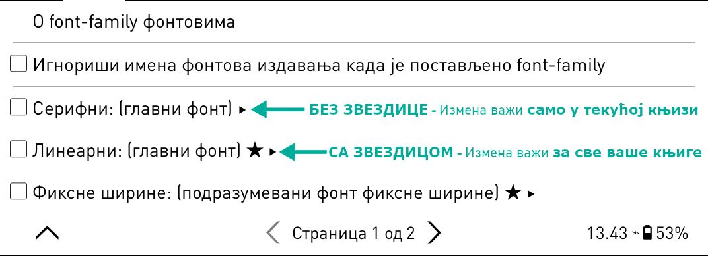
Ако често мењате фонтове (нпр. фиксне ширине за књиге из програмирања и серифне за романе) постоји заобилазно решење које спречава потребу да сваки пут одлазите у мени. Можете да креирате профиле за своје фонтове, као и за сва подешавања у вези са фонтовима као што су проред, контраст, подебљање итд. па да те профиле додате у Брзи мени. Тако да са једном гестикулацијом можете да отворите мени за избор фонта и да промените фонт као што је то приказано на слици испод:
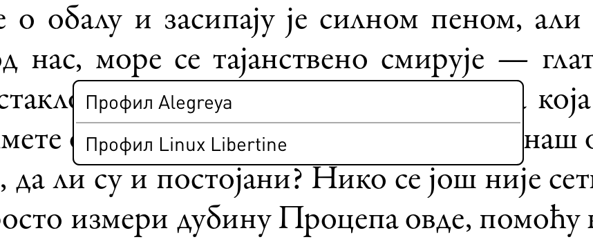
Погледајте одељак БРЗИ МЕНИ И ПРОФИЛИ овог упутства да научите како се то ради.
Ако ваша књига садржи делове писане фонтовима фиксне ширине (као у случају књига о програмирању), текст фиксне ширине би могао изгледати диспропорционално чак и ако је технички исте величине као и текст остатка књиге. Узрок овога је различита метрика фонта. KOReader има опцију која вам омогућава да подесите релативну величину фонта фиксне ширине и тако поправите ову разлику:
Овде можете да повећате или смањите величину свог фонта фиксне ширине тако што поставите скалирање као проценат подразумеване величине.
If you are having problems with the font weights when adding fonts to KOReader, this section can help you to understand how KOReader's font processing works:
- When starting up, KOReader compiles the available fonts by reading their embedded font metadata/info and classifies them according to family and weights. KOReader tries to determine the font family information from the metadata included in the font, so font names are not important when copying to your device.
- If you have more than one font file for a font family, KOReader will try to fit fonts in one of these 4 categories: Regular, Bold, Italic & BoldItalic. An ideal case looks like this:
- Luciole-Regular.ttf mapped to Font weight: 0 (Regular 400)
- Luciole-Bold.ttf mapped to Font weight: +3 (Bold 700)
- Luciole-Regular-Italic.ttf
- Luciole-Bold-Italic.ttf
- If your font provides only one file and it is not Bold, KOReader will assign it as (Regular 400) Font weight: 0 and synthesize all other weights and variants itself. In other words KOReader will fake italic and bold for this font. (If your single font file is a Bold font, then KOReader will synthesize the Regular weight from this bold font.)
If you long-press on the Font weight label in the bottom menu, it will tell you which weight classes your current font provides.
If your font also has other variants, things can get confusing. Let's say you copied a font family to your device. And upon startup, KOReader has read these variants of the font: Light, Thin, Normal, Medium, ExtraBlack, SemiBold, Bold, Black in this order. You would expect to see Normal variant to be used as the document's normal font (because it is named as Normal) but KOReader will use the Light variant because that is the first font in the list that doesn't have the bold flag. And it will ignore the Thin, Normal and Medium variants because it has already found a "not bold" font for the document.
And again according to this list, ExtraBlack will be used as the bold font because it is the first font in the list with the bold flag. And KOReader will ignore the SemiBold, Bold, Black variants, because KOReader has already found the "bold" it is looking for.
As a summary of the above: We copied the whole family and expected Normal and Bold variants to be chosen but instead, KOReader used Light and ExtraBlack variants. This happened because the order of the fonts that are fed to KOReader is not under our control so "first come is first served".
Solution is, transferring only the font files that you want to be used, like this:
- Keep only one of Thin, Extra Light, Light, Normal, Medium: It will be used as the regular font (If your Regular font is too thin, just replace it with Medium weight if you have it).
- Keep only one of Semi Bold, Bold, Extra Bold, Black, Extra Black: It will be used as the bold font.
- You can also add italic variants of the same weight (i.e. medium/medium-italic).
Функционалност KOReader читача под називом дотеривања стила вам омогућава да измените начин на који KOReader исцртава вашу књигу. Овде нећемо проћи кроз комплетан CSS курс. Желимо само да вам прикажемо основе, тако да када видите дотеривање стила, имаћете барем основну идеју шта оно ради.
EPUB документ можемо да опишемо као HTML фајл + нека CSS правила. Ова CSS правила одређују како ће се различити делови књиге (наслови, подебљани текст, цитати итд.) приказивати у апликацији читача. Помоћу дотеривања стила, можете изменити начин на који ће се исцртавати ваша књига додавањем нових правила и/или преиначавањем правила која је написао издавач и која су уграђена у вашу књигу.
Хајде да ово видимо на примеру дотеривања стила:
img { width: 10px !important; height: 10px !important }
Простим језиком, ово правило каже: „Игнориши њихову оригиналну величину и учини све слике у овој књизи 10 пиксела широке и 10 пиксела високе.” Дакле, ако у KOReader додате ово дотеривање стила, све слике у вашој књизи ће се приказивати малецке.
Хајде сада да ово дотеривање објаснимо ставку по ставку:
- img - Ово је CSS селектор који циља на све img (image–слика) елементе у књизи.
- { width: 10px !important; height: 10px !important; } - Ово је декларација блока. Садржи стилове који ће се применити на изабране img елементе.
- width: 10px !important; - Овај први део поставља ширину циљаних img елемената на 10 пиксела. Декларација !important је прекидач за преиначавање који обезбеђује да ваша вредност ширине има предност над било којим постојећим width декларацијама примењеним на ове слике.
- height: 10px !important; - Овај део поставља висину циљаних img елемената на 10 пиксела. Поново, декларација !important је прекидач за преиначавање који обезбеђује да ваша вредност висине има предност над било којим постојећим height декларацијама примењеним на ове слике.
Укратко, ово CSS правило је дизајнирано тако да постави фиксну ширину и висину од 10 пиксела свим img елементима у вашој књизи, игноришући њихов оригинални стил.
Ово су нека корисна дотеривања стила која можете да употребите директно или да их измените по својој жељи. Наредни наслов вам објашњава како да их користите у KOReader читачу.
- Додавање граничне линије изнад сваког наслова у књизи:
H1, H2, H3, H4 { border-top: 2px solid black; }
- Додавање мало маргине изнад наслова:
H1, H2, H3, H4 { margin-top: 2em !important; }
- Или ако књига има превелике маргине изнад наслова, уклањају се:
H1, H2, H3, H4 { margin-top: 0 !important; }
- Додавање малог размака између пасуса да би се текст лакше читао:
p + p { margin-top: 0.5em !important; margin-bottom: 0.5em !important; }
- Искључивање свих слика у EPUB:
img { display: none !important; }
-
Уместо да се искључе, слике се приказују у врло малим димензијама:
img { width: 10px !important; height: 10px !important }
-
Одељци блокова кода у књигама из компјутерске науке постају чистији и читљивији (Овде можете видети пример):
pre,code { font-size: 0.6em !important; line-height: 1.8em !important; background-color: #eee !important; margin: 1em 0 !important; padding: 1em 0 !important; }
OК, сада смо видели шта су дотеривања стила. Али како можемо да их користимо? KOReader познаје три врсте дотеривања стила:
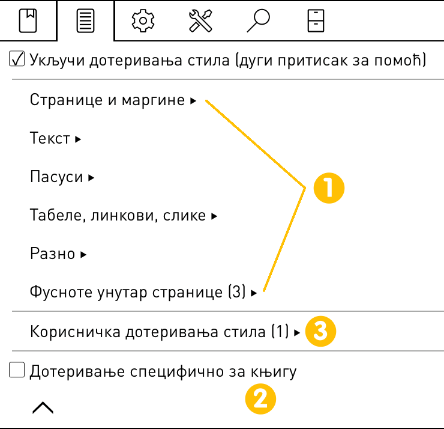
Овај наслов је нов, као и снимак екрана изнад и испод. Треба ли нешто да се дода?
Ова дотеривања се испоручују уз KOReader. Она се најлакше користе, јер је потребно само да се укључе из менија. Нема потребе да пишете било какав CSS кôд:
Јављају се у многим категоријама. Ако желите да дотеривање примените само на текућу књигу, штиклирајте поље. Ако желите да сазнате више информација у вези са овим дотеривањем или да га укључите за све књиге, извршите дуги притисак на његово име. Појавиће се следећи дијалог:
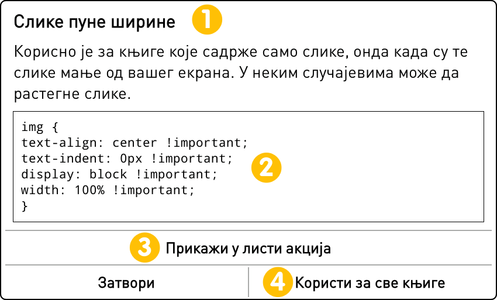
- Ова област приказује име и опис дотеривања
- Ово поље приказује CSS кôд дотеривања. Ако тапнете на ову област, копираћете кôд у клипборд. Затим можете да га налепите и измените у Дотеривању специфичном за књигу, као што је објашњено у наредном наслову.
- Дугме Прикажи у листи акција вам омогућава да ово дотеривање укључујете/искључујете гестикулацијом или да га додате у Брзи мени. За више информација, погледајте испод наслов „Како да се дотеривања користе ефикасно”.
- Дугме Користи за све књиге активира ово дотеривање за све ваше књиге. Уз његово име у менију ће се појавити звезда (★), чиме се означава да се ово дотеривање примењује на све књиге. Истим корацима, ово можете и да искључите.
Као што можете да погодите из имена, ова врста дотеривања је активна само за књигу за коју сте их креирали. Ова функционалност је кориснија за тестирање ваших дотеривања или ако је потребно да поправите нешто у текућој књизи и знате да вам то неће бити потребно за остале књиге. Када креирате ову врсту дотеривања, па схватите да вам је потребно и у осталим књигама (нпр. од истог издавача), можете да га конвертујете у корисничко дотеривање стила, што ћемо управо да објаснимо.
Да бисте креирали дотеривање специфично за књигу, употребите интегрисани едитор који можете да пронађете овде:
Ова група дотеривања се разликује од претходних по начину на који се креира. Такође, за разлику од претходног типа, она нису ограничена на једну књигу. Могу да се примене глобално на све ваше књиге.
Процедура је отприлике оваква, и објаснићемо је детаљно:
- Креирајте свој фајл корисничког дотеривања
- Пренесите га на уређај
- Укључите своје дотеривање из менија
1. Креирање фајла корисничког дотеривања:
Корисничко дотеривање стила је у ствари обичан текст фајл са .css екстензијом. Овај фајл можете да креирате:
- На свом компјутеру
- На свом уређају ако има едитор текста (као што су уређаји базирани на Android ОС-у)
- У интегрисаном текст едитору KOReader читача који можете да пронађете у додацима
Примере које смо навели изнад можете да копирате / налепите у свој фајл.
2. Пренос фајла на ваш уређај:
Након што креирате фајл(ове) који садржи ваша CSS правила, сачувајте га или га пренесите у styletweaks фолдер унутар ваше KOReader инсталације. Назовите фајлове описним именима јер ће име фајла бити наслов дотеривања у систему менија KOReader читача. У именима фајлова можете да користите доње црте „_”, оне ће се у менију третирати као размаци. Након преноса фајлова, морате поново да покренете KOReader тако да може да их учита.
2. Укључивање дотеривања:
Након поновног покретања, отворите књигу и идите на следећи мени:
Сада би у листи требало да видите своје дотеривање са пољем за штиклирање поред имена. Ако дотеривање желите да примените само на текућу књигу, штиклирајте поље. Ако желите да се то дотеривање укључи за све књиге, извршите дуги притисак на његово име. Појавиће се дијалог. Тапните ставку менија Користи за све књиге. Поред његовог имена у менију ће се појавити звезда (★) која означава да се ово дотеривање примењује на све књиге. Истим корацима можете да га искључите. Погледајте пример испод:
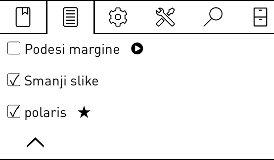
На горњој слици имам 3 фајла дотеривања стила styletweaks фолдеру моје KOReader инсталације. Прво је искључено јер није штиклирано поље. Друго је укључено само за једну књигу јер је поље штиклирано али нема звезде. Треће је укључено за све књиге (★).
Можда сте приметили да поред првог дотеривања постоји и икона десног троугла. Ово значи да се ово дотеривање може активирати гестикулацијама. Ово ћемо објаснити у наредном наслову.
Када креирате своја корисничка дотеривања стила можете да направите више фајлова дотеривања, од којих сваки мења неки део књиге, као у примеру са горње слике. Можете имати један фајл за наслове, остале да измене пасусе, линкове итд. Овакав модуларни систем вам омогућава да укључујете дотеривања у зависности од документа.
Као што смо рекли изнад, корисничка дотеривања стила можете да укључујете/искључујете из следећег менија:
Имамо и лакше начине за активацију и деактивацију ваших дотеривања стила осим одлажења у мени сваки пут.
1. Дотеривању можете да доделите гестикулацију
Да бисмо то урадили, наше корисничко дотеривање стила најпре морамо да додамо на листу акција гестикулација:
- Идите у мени корисничка дотеривања стила и извршите дуги притисак на ваше дотеривање стила
- У дијалогу притисните дугме Прикажи у листи акција
- У менију ће се из ваше дотеривање стила појавити икона десног троугла
Можете га видети на слици за пример изнад, уз Adjust margins дотеривање стила. Сада је ово дотеривање стила додато на листу акција. Можете је пронаћи у категорији Управљачу гестикулацијама > Документи који могу да се преслажу. Додаће се на крај листе.
2. Дотеривање можете додати у Брзи мени
Ако дотеривање желите да додате у свој Брзи мени, оно најпре треба да се дода у листу акција, на начин који је објашњен у претходном наслову. Затим можете да пратите кораке из одељка Брзи мени овог упутства.
Можете чак и да комбинујете обе методе и да креирате специјални Брзи мени за своја дотеривања стила, па да га затим доделите гестикулацији. На овај начин, једноставном гестикулацијом можете да приступите свим својим дотеривањима стила и да их по потреби активирате.
Имајте на уму да наслови у неким књигама можда нису у <H1> или <H2> елементима, већ у нечему као што је <p class="tit123">. Провером изворног кода можете сазнати који селектори се користе за одређени део текста. Да бисте то урадили, изаберите текст у околини елемента који вас интересује, па изаберите Прикажи HTML из дијалога. У горњем примеру, ваше дотеривање стила би изгледало овако:
P.tit123 { border-top: 2px solid black; }
уместо овога:
H1 { border-top: 2px solid black; }
KOReader вам даје могућност да имате интеракцију са својом књигом на исти начин на који је имате и са физичком књигом. Многа подешавања прозора маркера књиге могу да се измене овде:
МАРКЕРИ:
Можете да додате (и уклоните) маркер тако што притиснете горњи десни угао. Ово је исто као да савијете угао странице физичке књиге и приказује сличну икону када га укључите.
ИСТИЦАЊА:
Текст можете да истакнете једним од четири различита стила. На слици испод можете видети обичан пасус након којег следи четири различита стила истицања. Посветли (са сивом позадином), Подвуци, Прецртано и Инвертуј.
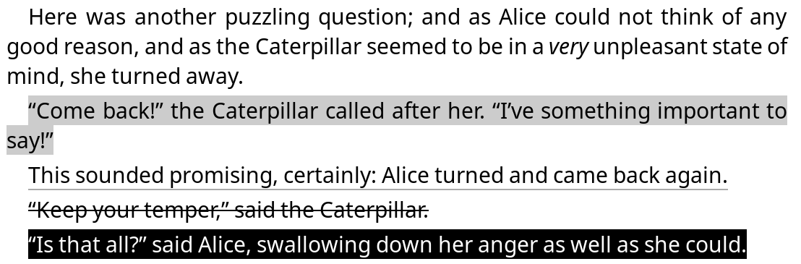
Све ове стилове можете да користите истовремено, као да су маркери различите боје. Или можете да се одлучите за омиљени стил, па да га у овом менију поставите као подразумевани тако што урадите дуги притисак на:
Такође, ако имате уређај са екраном у боји, истицања можете да креирате у различитим бојама:
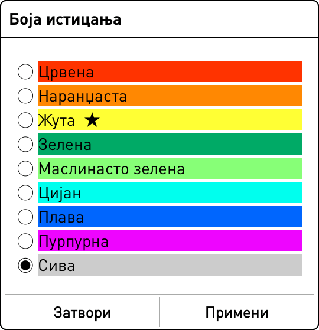
Неки савети за истицања у боји:
- Боју постојећег истицања можете да промените тапом на њега и избором Боја из искачућег менија.
- Боје можете да комбинујете са различитим стиловима истицања, као што су Подвучено и Прецртано и тако креирате моћан систем истицања. На пример, можете да употребите стил црвено прецртано за уклањања или наранџасто подвучено за важне делове итд.
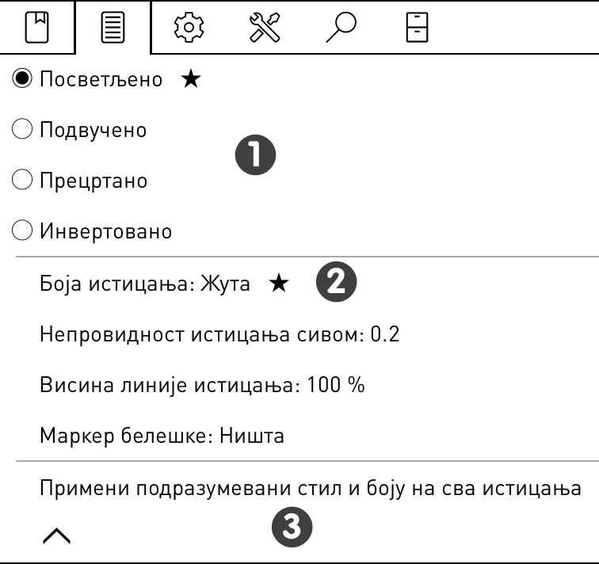
- У менију истицања можете да извршите дуги притисак на тип истицања и тако га поставите као подразумевано (★)
- Након избора боје, можете да извршите дуги притисак на име боје у овом менију и тако ту боју поставите као подразумевану (★)
- Можете да притиснете опцију Примени подразумевани стил и боју на сва истицања и тако учините да сва истицања у књизи изгледају на исти начин. Будите опрезни, не постоји поништавање ове команде!
БЕЛЕШКЕ:
Вашим истицањима можете и да додате белешке. Једноставно тапните на истицање и из искачућег менија изаберите ставку Додај белешку. Такође можете и да изаберете Маркер белешке који приказује која истицања садрже белешку. Постоји три стила: Подвучено, Линија са стране и Ознака са стране (што је икона оловке приказана на десној страни слике испод):
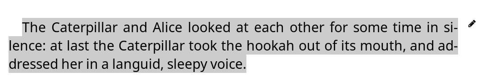
Ако желите да укључите ову функцију и изаберете стил за Маркер белешке, идите на:
After highlighting a part of your document, you can tap on the highlight to see the highlight menu. From this highlight menu, you can reach another extended menu by tapping on the ... (three dots) button as shown below:
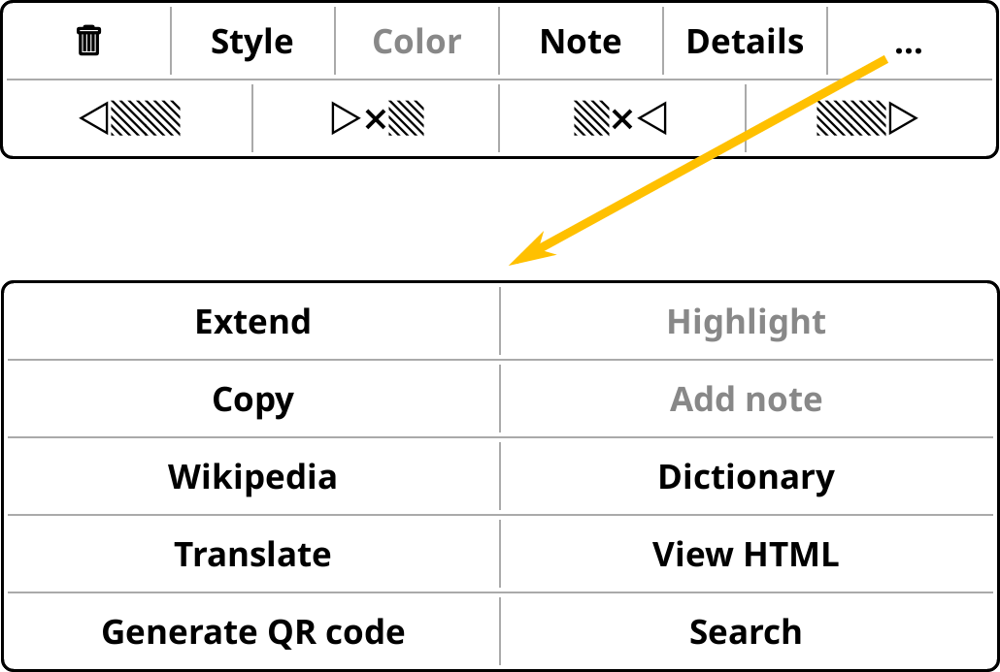
Using this extended menu you can:
- Extend your highlight to include more text
- Copy the text to clipboard to paste elsewhere
- Search the text on Wikipedia
- Look up the text in an installed dictionary
- Translate the text using the Google Translate service
- View HTML source of the highlighted section, which is useful when writing a style tweak
- Generate QR code which includes the highlighted text, to scan from another device with a camera and a QR-code reader application
- Search for the text in the book
KOReader поседује два режима истицања који се користе у различитим ситуацијама:
Нормални режим је сличан избору текста прстом на телефону/таблету и погоднији је истицања која су краћа од једне странице.
- Дуги притисак на почетну реч
- Померите прст на крај пасажа
- Подигните прст са екрана
Када наиђете на границу између две странице, KOReader ће окренути страницу да би могли да наставите истицање (само у EPUB/HTML документима). Ову функцију можете да искључите из:
Режим Изабери и истакни је више прилагођен истицању дужих пасажа који се простиру на више страница. Такође може боље функционисати ако имате проблема са осетљивошћу екрана или са контролом моторике својих руку. Јер у овом режиму истицања нема потребе да превлачите прстом по екрану.
Како се истиче:
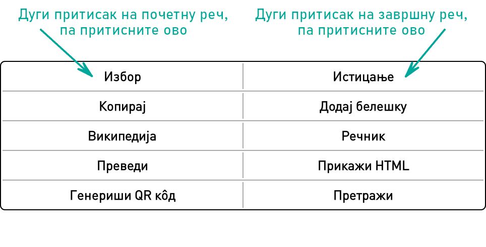
- Дуги притисак (или превлачење ако је укључена претрага речника, као што је описано изнад) на почетну реч, појавиће се искачући мени.
- Тапните на Избор, сада се налазите у режиму истицања. Док се налазите у овом режиму, у горњем левом углу екрана ћете видети индикатор (који можете да тапнете и добијете додатне информације). Истицање можете да откажете тапом на почетак истицања. У овом режиму можете да окрећете странице таповима/превлачењима и да се слободно крећете кроз документ (садржај, прелетање итд.).
- Дуги притисак (или превлачење ако је укључена претрага речника, као што је описано изнад) на завршну реч истицања, поново ће да се појави мени.
- Овај пут тапните на Истицање и завршите истицање пасажа.
Овај дијалог се обично отвара на центру екрана. Ако желите да се отвори ближе месту које тренутно истичете, промените овде опцију Центрирано на Позиција истицања (која се налази на другој страници следећег менија):
Када вршите истицање, KOReader покушава да у истицање укључи везане знакове интерпункције око текста који изаберете. На пример, ако истичете од прве до последње речи реченице, KOReader ће у истицање аутоматски да укључи знаке интерпункције са оба краја реченице.
Али ако истицање започнете из средине реченице, тачка на крају се неће укључити у истицање јер KOReader претпоставља да желите да извршите делимично истицање. Тако да ако желите да знаци интерпункције буду придодати тексту који истичете, постарајте се да изаберете целу реченицу. Ове знаке можете и касније да додате дугим притиском на дугмиће за Уређивање истицања.
Када тапнете на текст који је већ истакнут (али је без белешке), појавиће се следећи искачући мени. Ставке Обриши и Додај белешку су јасне. Доњи ред ставки менија се користи за проширивање или сажимање истицања.
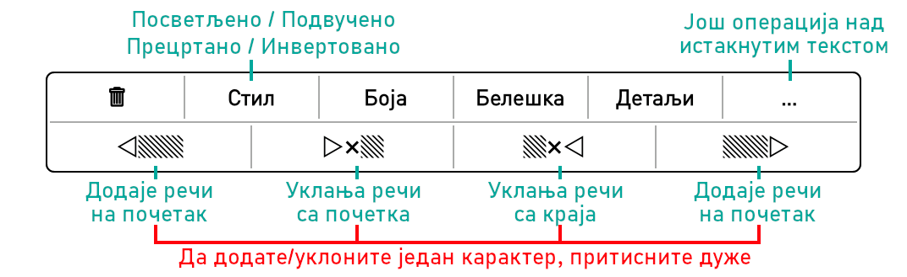
Када тапнете на текст који је већ истакнут са додатом белешком, приказаће вам се следећи искачући мени. Тапните на Уреди истицање и отвориће вам се мени изнад у којем можете да уредите и истицање и напомену везану за њега:
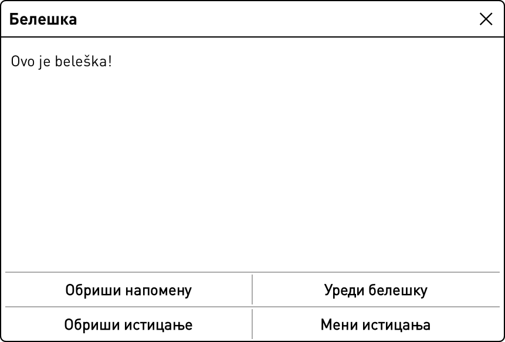
На страници Маркери можете филтрирати приказ тако да се прикаже само један тип маркера тако што притиснете икону менија ( ) Такође можете да филтрирате по стилу истицања:
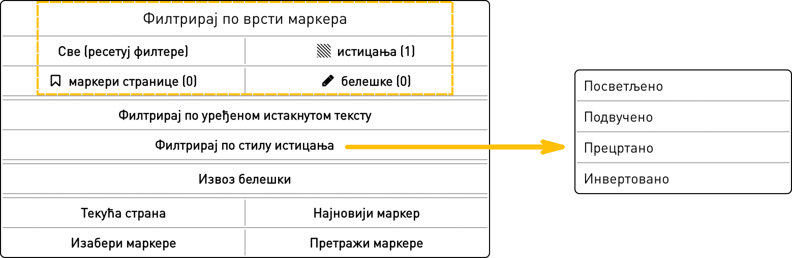
Уз могућност додавања белешке, KOReader вам такође омогућава да уредите сам текст истицања који се приказује у Листи маркера. У неким ситуацијама ово може бити корисније од додавања белешке истицању. На пример, замислите да прегледате текст. Желите да истакнете реченицу која садржи доста датума и један од њих је погрешан. Када пожелите да додате напомену која треба да указује на ову грешку, морате у напомени да наведете који датум је погрешан. Али ако уредите текст истицања, можете уз проблематични датум директно да напишете „(овај датум треба да се провери)”.
Имајте на уму да ово уређивање не мења садржај књиге или истакнутог пасажа на страници. У читачу ћете још увек видети исту истакнуту реченицу. Оно што сте уредили ће се видети само у Листи маркера. Па када касније извезете своја истицања, извешће се тај уређени текст.
Ако желите да уредите истакнуте текст можете да:
- Тапнете на истицање
- Тапнете на Детаљи у искачућем менију
- Тапнете на Уреди текст у дијалогу детаља
То можете да урадите из прозора Маркери:
- Идите на Листу маркера помоћу менија или гестикулације
- Извршите дуги притисак на истицање које желите да уредите
- Притисните у менију Уреди текст
- У дијалогу измените текст и притисните дугме Сачувај
Ако уређени текст желите да вратите на оригинално истицање, следите претходне кораке, па у кораку 3, уместо дугмета Уреди текст, притисните дугме Ресетуј текст.
Обично када отворите листу Маркери, приказује са само садржај ваших истицања. Ако сте истицању доделили белешку, у листи Маркери ћете видети само икону оловке. Можете да извршите дуги притисак на ставку листе и моћи ћете да видите (и уредите) додату белешку. Ако у листи Маркери желите да видите и и текст белешке, поставите то овде:
Имате избор да се прикаже:
- Само истакнути текст (подразумевано понашање)
- И истакнути текст и белешка
- Белешка ако постоји, у супротном истакнути текст
Након што завршите књигу, можете да је преместите у посебан фолдер који служи архивирање или обраду. Укључите додатак Премести у архиву и у његовим подешавањима поставите циљни директоријум (Постави директоријум архиве). Након тога књигу можете да преместите у фолдер архиве:
- Менијем додатка Премести у архиву
- Гестикулацијом или
- Ставком Брзог менија
KOReader обезбеђује различите начине за извоз ваших истицања и белешки са уређаја за читање:
Овај свестрани додатак може да извезе ваша истицања у локалне фајлове или на мрежне сервисе.
Локални извоз
Истицања можете да извезете на уређај у следећим форматима:
- Текст (.txt)
- HTML (.html)
- Markdown (.md)
- Kindle Clippings (.txt)
- JSON (.json)
Жељене формате извоза можете да изаберете из:
Можете да видите (а ако то желите, такође и да измените) локацију за извоз:
Сервиси на мрежи
Преко мреже такође можете да извезете и на следеће сервисе:
- Joplin - апликација за прављење белешки
- Readwise - апликација за маркере/истицања на мрежи
- Memos - централно место за белешке, отвореног кода, хостовано код вас
- Flomo - мрежни сервис за прављење белешки
- XMNote - Android организатор маркера на кинеском језику
Детаљна упутства за подешавање ових сервиса можете да пронађене на нашој вики страници посвећеној овој теми.
Када изаберете формате, из истог менија додатка можете да извезете белешке за текућу књигу или за све књиге у библиотеци.
Ако желите да извршите извоз само за неке књиге из библиотеке, то можете да урадите из Прегледача фајлова:
- У Прегледачу фајлова изаберите више књига
- Тапните на мени дугме (приказано као знак за штиклирање) у горњем десном углу
- Из менија који се прикаже, изаберите Извези истицања
You can also export only chosen highlight styles: lighten, underline, strikeout, invert. Normally KOReader exports all of them. You can choose from:
You can customize the filename of the exports from the plugin's menu (Set export filename) to include date/time information and other useful info.
KoHighlights је спољни програм који инсталирате на свој компјутер. Када читач повежете са компјутером, он може приступити вашим белешкама и истицањима у књизи. За преузимање и упутства, погледајте GitHub страницу пројекта.
Calibre је спољни програм који инсталирате на компјутер. Истицања можете да увезете у Calibre базу података његовим KOReader Sync додатком. Тај додатак можете да инсталирате из Calibre апликације. За преузимање и упутства, погледајте страницу пројекта.
KOReader provides you different ways to read a PDF/DJVU document which is optimized for bigger page sizes (generally A4 or Letter) on your smaller screen device:
1. You can enableReflow
Преслагање покушава да издвоји текстуални део документа (ако је доступан) и да га форматира у једну колону. Резултат је углавном задовољавајући. Ово такође можете да подесите и као подразумевано тако што тапнете и задржите.
2. Можете да укључите Зумирај на садржај
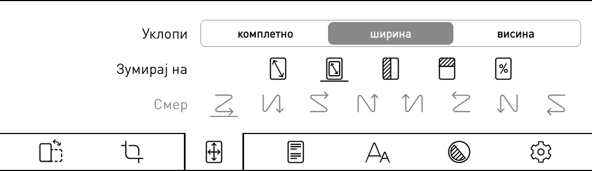
Овом опцијом KOReader покушава да опсече маргине документа тако да текст на екрану може изгледати већи. У истом менију можете да поставите и уклопи на ширину чиме се уместо целе, покушава уклапање само ширине странице, тако да ће текст изгледати већи.
3. You can try to use your device inLandscape orientation
На овај начин је екран шири, па документ може изгледати довољно велики за удобно читање.
4. Уместо да скролујете екран и читате различите делове, можете да се зумирате на 100 процената
Ово је посебно корисно за стрипове. Најпре у овом менију укључите режим колона:
Затим у истом менију изаберите одговарајући смер тока:
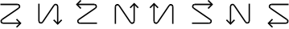
- На пример, ако читате чланак који је сложен у две колоне, скроловаћете наниже све до краја странице читајући леву колону, па ћете затим да наставите читање десне колоне од горњег десног угла странице:
- Или, ако читате стрип, одговараће вам да се крећете „десно / доле лево / десно” по цик-цак линији:
- У случају јапанских стрипова (редослед панела с десна у лево) ово може бити обрнуто:
У овом режиму такође у истом менију можете да подесите и Хоризонтално/Вертикално преклапање и Колоне како би се текст још боље уклапао на екран. Слободно експериментишите са овим подешавањима.
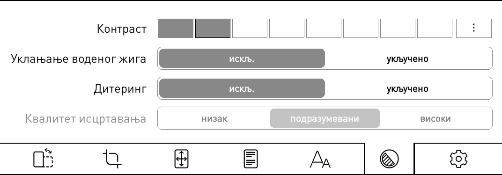
Контраст подешавање подешава нивое црне боје у вашем документу. Имајте на уму да се иста вредност контраста примењује и на текст и на слике документа. Ако га поставите на врло велику вредност, слике ће постати сувише тамне.
Уклањање воденог жига Уклања водени жиг из исцртаног документа. Такође може да се употреби за уклањање сивих позадина. Ова функција може да конвертује документ који користи нијансе сиве или боје у црно-бели формат чиме се добија бољи контраст и олакшава читање.
Квалитет исцртавања (активан само у режиму Преслагања) поставља квалитет процеса који издваја текст и слике и квалитет излаза. Високи је пријатнији али може бити много спорији (неколико секунди за окретање странице) од подразумеваног, у зависности од документа. ако су ваши PDF/DJVU фајлови спори, ово је прво подешавање које би требало да проверите.
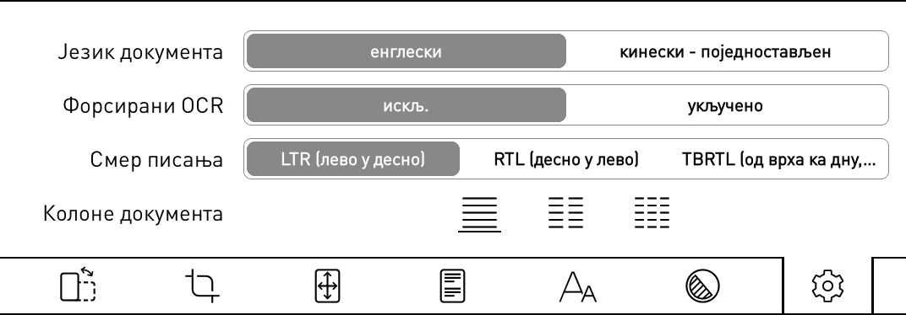
Језик документа поставља језик документа који ће користити механизам за OCR.
Форсирани OCR, као што име каже, форсира употребу OCR (оптичког препознавања карактера) чак и када документ поседује слој са текстом.
Смер писања (активно само у режиму преслагања) поставља смер оригиналног документа. Поставите ово на RTL за језике као што су арапски и хебрејски.
Колоне документа (активно само у режиму Преслагања) поставља број колона текста у оригиналном документу.
Функција Аутоматско исправљање може да исправи странице проблематичних докумената, на пример, странице PDF документа који је скениран под углом. Доступна је за PDF, DJVU, CBZ/CBT документе и за фајлове слика. Да бисте је укључили, изаберите максимални угао нагнутости који ће KOReader покушати да коригује. Ако не успе, мораћете пробати да изаберете већи угао. Имајте на уму да би у зависности од више фактора, ова функција могла да успори читач.
Ако желите да сачувате своја истицања, употребите KOReader функционалност Извези истицања која је објашњена у претходном одељку.
Ако правите истицања у PDF документу, KOReader такође може да их сачува директно у PDF фајл. Ово може бити корисно у одређеним ситуацијама, јер овом методом истицања постају део PDF фајла. То значи да их можете видети и у осталим апликацијама, без потребе да инсталирате KOReader. На пример, ако фајл са истицањима шаљете неком другом кориснику, он не мора да има инсталиран KOReader да би видео ваша истицања. Једноставно можете да му пошаљете PDF фајл са истицањима која су сачувана у сам фајл и он ће моћи да их отвори и погледа компатибилним PDF читачем.
This feature should work on all PDF readers. We tested and confirmed these: Adobe Acrobat Reader, Chrome Browser, Deepin Reader, Evince, Firefox Browser, Foxit Reader, Ghostscript, LibreOffice, Moon Reader, MuPDF, Okular, Xpdf, Zathura.
Пошто креирање истицања за каснију употребу може захтевати значајни труд, ако планирате да користите ову функционалност, требало би да разумете начин на који она ради и тако спречите фрустрирајуће ситуације.
КРАТАК РЕЗИМЕ: ако желите могућност да обришете или извезете своја PDF истицања касније, морате да копирате .sdr фолдер придружен вашој књизи када правите резервну копију или копирате књигу на друге уређаје. Без овог фолдера, KOReader још увек може да прикаже сачувана истицања, али не може да зна где се она налазе у фајлу, тако да не може да их измени. Молимо вас да наставите читање да бисте сазнали више о овоме.
Како у KOReader читачу раде обична истицања
Када у KOReader читачу направите истицање, било да је то EPUB или PDF документ, ово истицање се уписује у фајл подешавања. На пример, ако читате Alice in Wonderland.epub имаћете фолдер под називом Alice in Wonderland.sdr у истом фолдеру у којем се налази и књига. Ваша истицања се чувају у фајлу унутар овог .sdr фолдера. Ово значи да ако обришете тај .sdr фолдер који је придружен књизи, изгубићете и своја истицања.
Како у KOReader читачу раде PDF истицања
Функционалност PDF истицања ради на донекле различит начин од оног који је описан изнад. Као што смо раније рекли, када сачувате своја PDF истицања, она ће се директно уписати у PDF фајл, што значи да постају део самог фајла. То је разлог што тај PDF можете послати неком другом кориснику и он ће моћи да види истицања компатибилним PDF читачем. Неће им требати ваш .sdr фолдер који садржи запис ваших истицања јер су сада истицања директно уграђена у PDF фајл.
Хајде да на примеру објаснимо проблем који може да настане када користимо ову функционалност. Замислите на свом e-читачу PDF књигу читате програмом KOReader:
- Правите истицања и укључена је опција Упиши истицања у PDF, тако да како правите ова истицања, KOReader их чува у PDF фајл.
- Затим желите наставити читање књиге на телефону програмом KOReader, тако да овај PDF фајл копирате са e-читача на телефон (али нисте копирали .sdr фолдер, већ само PDF фајл).
- Када KOReader читачем телефону отворите књигу, видећете да су истицања још увек ту.
Сада је ситуација на оба уређаја иста. KOReader и на e-читачу и на телефону приказује PDF фајл са истим истицањима. Али то само изгледа идентично, у суштини постоји велика разлика.
KOReader на вашем e-читачу зна која истицања у овом PDF фајлу је направио KOReader јер има .sdr фолдер. Али KOReader на вашем телефону то не зна. Он има само PDF фајл.
Разлика се јавља када покушате да обришете pdf истицања или да их извезете. Ваш e-читач може и да обрише и да извезе ова PDF истицања. Али KOReader на вашем телефону то не може, јер као што смо рекли, он нема .sdr фолдер ваше књиге, тако да из његове перспективе, истицања у књизи изгледају као део оригиналне књиге.
Укратко, ако желите могућност да касније обришете или извезете PDF истицања, морате да копирате .sdr фолдер придружен књизи када правите резервну копију или копирате књигу на друге уређаје.
KOReader can import highlights from PDF files which are marked with other PDF applications. We can't give a list of compatible applications, but import feature generally works with popular PDF readers.
To import the highlights:
- Open your PDF file with KOReader
- Open the Bookmarks dialog from here:
- Press the button at the top-left corner.
- On the opened dialog, choose Import embedded annotations. Your highlights will be added to the Bookmarks list.
After the import process, highlights in the PDF will turn into regular KOReader highlights. Which means, you can:
- Add notes to them
- Change their style and color
- Delete them (See the note below)
- Export them in various formats
How deletion works: When you import highlights, KOReader doesn't modify the original highlights in your PDF. It adds imported highlights as a layer on top of the originals. So if you delete an imported highlight, only this added layer is deleted. Your original highlights are not deleted from the PDF file. You can open this PDF with another reader and still see the original highlights.
OCR (Optical Character Recognition) је процес издвајања текста из слика. У контексту KOReader читача, ово се у општем случају користи за издвајање текста из скенираних страница књиге у PDF фајловима. KOReader се за овај задатак ослања на Tesseract Open Source OCR Engine.
Ако желите да користите ову функционалност, потребно је да:
- Инсталирате у KOReader Tesseract језичке податке
- Додате ново инсталиране језике у koreader/defaults.lua конфигурациони фајл (неопходно је у случају да је ваш језик није енглески или кинески)
Стриповима је у општем случају потребно чешће освежавање страница него садржају чистог текста. За обичан текст, интервал освежавања странице можете без проблема да поставите на веће бројеве. Али слике могу да оставе више остатака и да изазову појаву такозваних духова, што посебно зависи од врсте панела уграђеног у ваш e-читач.
KOReader вам омогућава да било коју гестикулацију доделите различитим учесталостима освежавања. На пример, можете да поставите превлачење навише по левој ивици на освежавање свака страница када читате стрипове и поставите превлачење наниже по левој ивици на oсвежавање свака x страница за чисто текстуалне књиге. Тако да када отворите стрип, можете да укључите чешће освежавање простим тапом или превлачењем (или обрнуто).
Ова акција се налази у:
Ова функција олакшава читање стрипова на мањим екранима. Можете да је укључите док читате PDF, DJVU, CBZ или CBT документ из:
Када је ова опција укључена, KOReader покушава да пронађе границе правоугаоних панела на екрану. Ако на панел извршите дуги притисак, KOReader се зумира и приказује само тај панел.
Као што већ погађате, ова функционалност најбоље ради у стриповима који имају чисте границе панела. Такође, услед овог проблема одређивања граница, у овом режиму нема окретања странице за скок на наредни панел. Морате најпре да затворите зумирани панел, па да извршите дуги притисак на наредни. Да бисте то урадили, једноставно превуците наниже овај зумирани панел. Такође можете да употребите било коју гестикулацију мултипревлачења (било коју комбинацију горе, доле, лево, десно) да напустите овај приказ.
Процедура може да се види испод:
Ако ову функцију желите да користите и са осталим типовима фајлова као што су EPUB, FB2, HTML или фајлови слика, потребно је да фајл отворите другим механизмом: у Прегледачу фајлова извршите дуги тап на име фајла, тапните на Отвори помоћу… и изаберите MuPDF.
Када дођете до последње странице књиге, KOReader вам приказује дијалог. У њему се налази акција Отвори наредни фајл која ће да отвори наредни фајл у истом директоријуму у којем се налази и текућа књига. Тако да серије можете да поставите у посебне директоријуме и да епизоде читате једну за другом, без потребе да одлазите назад у Прегледач фајлова.
Када отвара овај наредни фајл, KOReader прескаче фајлове које сте означили као завршене. Ова функција је корисна на пример, када имате фолдер манга фајлова и неке од њих сте већ прочитали. Фајл можете да означите као прочитан на крају дијалога приказаног изнад. Такође можете да га означите из Прегледача фајлова тако што извршите дуги притисак на фајл. Након копирања фајлова на уређај можете да:
- Отворите Прегледач фајлова у програму KOReader
- Извршите дуги притисак на оне које сте већ прочитали и тапнете на Означи као прочитану
Сада све фајлове можете да читате тако што на крају књиге тапнете на Отвори наредни фајл. KOReader ће да прескочи оне које сте већ прочитали.
Ако на e-ink уређају читате манга књиге постоје неки савети којима можете да унапредите искуство читања. Ако нисте задовољни како стрипови изгледају на уређају који користите, најбоље решење је да сами припремите манга фајлове.
Типови фајла као што су MOBI и EPUB нису погодни за обраду садржаја који се примарно састоји од слика (нпр., манге/стрипови). Подршка за MOBI у KOReader читачу је минимално до никаква, а приоритети исцртавања текста код EPUB формата могу да изазову проблеме када се приказују слике које покривају целу страницу. За више техничких детаља, молимо вас да посетите овај GitHub проблем.
Најбоља опција је да изградите CBZ фајл који много боље функционише у програму KOReader. Фајл са .cbz екстензијом је zip фајл (без компресије) који представља збирку слика, најчешће .png или .jpeg фајлова, организованих у странице стрипа. KOReader такође може да отвори и CBT фајлове, који су слични са CBZ фајловима, али користе формат TAR архиве.
Easiest way to convert a manga to CBZ is to get the manga as images from various websites, then convert them using Kindle Comic Converter. There are some useful settings like auto-rotating two-page splits to landscape and applying dithering so that e-ink rendered gradients are smoothly dithered without jagged layers.
Најбољи резултати се добијају ако промените величину слика на тачну величину екрана e-читача. CBZ специфичан за екран који циља на тачну величину екрана уређаја спречава скалирање током читања. KOReader током читања може да смањује слике на величину екрана, али се то не препоручује, јер KOReader пре скалирања додаје корак дитеровања, а тиме се губи квалитет.
Али ако желите да свој ручно направљени CBZ користите на више уређаја, или ако желите да очувате високу резолуцију за накнадне поправке, најбоља опција би била да CBZ направите тако да одговара уређају са највишом резолуцијом. Или да изаберете произвољну „високу” резолуцију, по могућству ону која одговара оригиналима. 300 PPI или боље (до 450 или чак 600), осим наравно, ако је извор ниже резолуције. Ако претпоставимо екран величине 8", 1500×2000 је добра циљна резолуција. У случају већих слика, требало би да их пробате на уређају и видите може ли да се носи са њима. На пример, доста стари Kindle уређаји са мало меморије могу да имају проблема са величинама као што су 3000×4000. Ако аутоматизујете процес, може бити корисно да размотрите истовремено креирање верзија нижег и вишег квалитета (нпр. 200/400 или 300/600 DPI).
Следи пример процедуре за обраду једног манга фајла:
- Преузмите Kindle Comic Converter (KCC) са адресе https://github.com/ciromattia/kcc
- Преузмите мангу из извора који желите да користите (нпр. HakuNeko)
- Распакујте манга фајл. Сада би требало да имате директоријум који садржи само слике (или поддиректоријуме са сликама, без архива)
- Обрадите овај директоријум са KCC. Сваки директоријум ће да креира један CBZ фајл, тако да ако желите одједном да направите неколико томова, изаберите више директоријума одједном
Нека корисна подешавања програма KCC:
Spread splitter: ова функција детектује двоструке странице и омогућава вам да их ротирате или да из пресечете на две странице.
Upscaling: повећава слике које су мање од циљне резолуције.
Due to the color e-ink screen technology, it is possible to see rainbow like color artifacts when reading black-and-white comics/manga with fine shading or dots. If you are having this problem, there is a KOReader plugin named Derainbowify that solves it. You can see the detailed info and install instructions on the GitHub page of this plugin.
Ако у манги желите да уживате на окружујући начин, док креирате CBZ обезбедите да сте у KCC изабрали потпуно исту резолуцију као што је резолуција екрана вашег уређаја. Такође, док читате мангу KOReader можете да сакријете траку напретка на дну. Тако ћете на мангу добити окружујући поглед пуног екрана, без сметњи.
Када употребите KCC да креирате CBZ фајл, на слике можете да примените додатно дитеровање. На тај начин ће се градијенти на e-ink екрану исцртавати глатко, без назубљених слојева. Овај корак ће креирати фино подешене манга томове који много боље изгледају у програму KOReader.
За обраду слика можете да употребите ImageMagick. ImageMagick је моћна софтверска свита отвореног кода која служи за приказивање, креирање, конвертовање, измену и уређивање растерских слика. Можете да преузмете ImageMagick и да га из командне линије користите за истовремену обраду великог броја слика.
- Распакујте припремљени CBZ фајл који сте креирали програмом KCC,
- Преузмите следећи фајл dither_pack.zip (који се налази на Yandex Disk) и садржи два batch фајла (.BAT) и GIF шаблон боја.
- Распакујте та три фајла уз слике које треба да се обраде
- Уредите _magick_manga_ditherN_resize.bat и промените резолуцију тако да одговара резолуцији вашег уређаја (на оба места у BAT фајлу).
Next step will replace all the images in the directory with the processed ones. So make sure that you have a copy of them in some other directory if you want to keep the originals.
- Покрените _magick_manga_ditherN_resize.bat да измените величину слика и да примените дитер.
- Под претпоставком да имате инсталиран програм 7-Zip, покрените _batch_archive.bat да обрађене слике спакујете у CBZ архиву.
KOReader можете подесити тако да се странице окрећу слева у десно, тако да су превлачења и тап зоне замењене. Ако то желите да укључите, додајте следеће линије:
["/storage/emulated/0/Books/manga"] = {
["inverse_reading_order"] = true,
["kopt_zoom_direction"] = 0,
},
у следећи фајл:
/koreader/settings/directory_defaults.luaгде је /storage/emulated/0/Books/manga апсолутна путања директоријума који садржи манге. Након ове измене, када отворите фајл из поменутог директоријума, превлачења и тап зоне ће бити обрнути.
Када KOReader покренете по први пут, приказаће вам се интерфејс прегледача фајлова. То је један од два главна интерфејса KOReader читача. Овде ћете обављати све операције са фајловима и фолдерима. Из екрана читања му приступате овако:
Прегледач фајлова подразумевано приказује ваш ПОЧЕТНИ фолдер, који представља главни фолдер ваше библиотеке. Ово можете да промените дугим притиском на било који фолдер. Можете да промените многе опције прегледача фајлова, као што је начин на који се приказују или сортирају књиге из МЕНИЈА НА ВРХУ који отварате превлачењем наниже у горњем делу екрана.
Испод су објашњене заокружене ставке у слици:
РЕСЕТУЈ: ова опција вам омогућава да ресетујете неке особине документа као што су напредак читања, маркери, произвољна слика омота итд. и које можете да изаберете у наредном дијалогу.
ОТВОРИ ПОМОЋУ: KOReader поседује различите механизме за исцртавање различитих типова фајлова. У неким случајевима фајл можете да отворите другим механизмом како би добили неке другачије функционалности. Погледајте одељке Приказивање фајлова архиве и Приказивање фајлова слика одмах испод.
ИГНОРИШИ КОРИЦЕ: ако из неког разлога желите да искључите омот за ову књигу (можда поседује погрешни омот или се омот не приказује како треба на e-ink екрану) можете да изаберете ово.
ИГНОРИШИ МЕТАПОДАТКЕ: ако метаподаци ваше књиге нису исправни, поље назива може да приказује бескорисне информације. Изаберите ову опцију да би се уместо метаподатака приказивало име фајла.
ОСВЕЖИ КЕШИРАНЕ ИНФОРМАЦИЈЕ О КЊИЗИ: када је додате у библиотеку, KOReader кешира метаподатке књиге и њен омот. Ако након копирања на уређај извршите неке измене над књигом, може бити потребно да се ове информације освеже. Ако видите погрешан омот или метаподатке, овом ставком менија можете да освежите информације о књизи.
Normally, KOReader file browser doesn't show these two groups of files and directories:
- Hidden files and directories: These are files and directories that start with a dot (.) character, like .screensavers. If you want to see these directories and files, enable this option:
- Unsupported file types: These are the file types that KOReader can't open directly, like font files with a .ttf extension. KOReader can directly open these file types: PDF, EPUB, DJVU, MOBI, CBR, CBZ, CBT, DOCX, RTF, HTML, HTMLZ, TXT, XPS, FB2, PDB, CHM and MD document types, image files and ZIP/RAR archives, so only these files are visible in the file browser. If you want to see the unsupported file types too, you can enable this option:
Прегледач фајлова вам омогућава да неке операције (као што је копирање, премештање, брисање, извоз истицања) истовремено извршите над више фајлова. Ова процедура почиње тиме што прво изаберете фајлове. Тренутно постоји три различита начина за избор фајлова над којима ће се извршити масовне операције у прегледачу фајлова:
- У првом методу, извршите дуги притисак на име фајла и изаберите из искачућег дијалога Избор. То ће активирати Режим избора. Сада можете да тапнете на остале фајлове и да их тако додате у избор. Када завршите са избором фајлова, тапните на икону знака штиклирања у горњем десном углу екрана. У дијалогу можете изабрати шта желите да се уради са овим фајловима. Или да из истог дијалога напустите режим избора.
- У другом методу, притисните + (плус) икону у горњем десном углу па у дијалогу тапните на Изаберите фајлове. Ово ће да активира Режим избора и остало је исто као у првом методу описаном изнад.
- In the third method, you can choose your files based on a File search . This is useful if you need to perform an operation on many files distributed in different folders. For example you want to move all files in your collection authored by Tolkien, to a new folder. Steps for this action will be:
- Из Менија на врху притисните на Картицу претраге (икону лупе) и изаберите Претрага фајлова.
- Штиклирајте опцију Обухвати подфолдере ако желите да се претрага врши и у њима. Ако желите да KOReader претражује и по метаподацима књиге, можете да штиклирате и Такође претражуј и по метаподацима књиге. У супротном, KOReader ће реч коју сте унели тражити само по именима фајлова.
- Претрагу можете да започнете из свог Почетног (кућног) директоријума или Тренутног директоријума притиском на одговарајуће дугме.
- Када се претрага заврши, појавиће се листа фајлова (наравно, само ако је тражени израз пронађен). Сада можете да тапнете на Хамбургер икону у горњем левом углу екрана да уђете у Режим избора.
- Тапните на све фајлове над којима желите да извршите операције и тапните на Икону знака за штиклирање у горњем левом углу екрана. Појавиће се дијалог у којем се налази Изабери у прегледачу фајлова. Тапните на ову опцију.
- Сада се враћате у Прегледач фајлова и фајлови које сте изабрали у Дијалогу претраге ће такође бити изабрани и овде.
- Тапните на Икону знака за штиклирање у горњем десном углу екрана. Сада можете да изаберете шта желите да се уради са фајловима из дијалога.
KOReader вам омогућава да своје омиљене фолдере додате у мени Пречице директоријума којем се брзо приступа. На пример, ако у библиотеци имате директоријум Архивирано под Home>Чланци>Научниc>Архивирано, овом фолдеру Архивирано можете да доделите пречицу и да му касније брзо приђете, чак и док читате књигу.
Додавање пречице директоријума:
Постоје два начина да додате фолдер на листу Пречице директоријума:
- Када се налазите у Прегледачу фајлова, тапните дугме + (плус) мени у десном углу, па затим тапните на ставку Додај у пречице директоријума и унесите описно име ове пречице. Ово додаје фолдер у којем се тренутно налазите.
- Када се налазите у Прегледачу фајлова, урадите дуги притисак на име фолдера тако да се отвори контекстни мени. Тапните на ставку Додај у пречице директоријума и унесите описно име ове пречице. Ово додаје фолдер који сте притиснули.
Директоријуми који се налазе на листи Пречице директоријума ће имати звезду (★) у Прегледачу фајлова.
На исти начин можете да уклоните пречице, дугим притиском на њу и избором Уклони из пречица директоријума.
Приказ пречица директоријума:
Пречице директоријума можете да отворите из Прегледача фајлова или Екрана читања док читате књигу.
- Из Прегледача фајлова: + (плус) мени у горњем десном углу, па избор Директоријумске пречице или доделом гестикулације.
- Из Екрана читања: доделом гестикулације за то.
Налази се у Прегледач фајлова одељку Управљача гестикулацијама. У одговарајућем одељку овог упутства можете да научите како се постављају гестикулације.
Ако имате књиге у .txt формату (што се чешће среће на кинеском и језицима који користе ћирилицу), можете покушати да укључите функцију Аутоматски откриј распоред TXT фајлова. У неким случајевима она може да побољша исцртавање и учини да текст више „личи на књигу”. Када је укључена, механизам за исцртавање ће користити хеуристике (текст обавијен на некој максималној дужини линије, једна или две празне линије означавају пасусе, увлачење или центриран текст се сматра за наслов…) да би погодио како да боље исцрта текст и покуша да креира садржај.
Ову функционалност можете да укључите овде (видљива је само ако читате .txt фајл):
Имајте на уму да би ова функционалност могла да забрља ASCII цртеже и форматирање засновано на карактеру размака. Ако књига коју читате има овакве елементе, можда је боље да се користи подразумевани режим у којем се текст фајл исцртава онакав какав је фонтом фиксне ширине.
KOReader може да чита фајлове сачуване/компресоване у ZIP фајловима. Такође можете да отворите и ZIP, CBZ и EPUB (пошто су и они ZIP архиве) фајлове приказивачем архиве и тако погледате фајлове који се налазе у њима:
- У Прегледачу фајлова урадите дуги притисак на име фајла
- Тапните на Отвори помоћу…
- Тапните на Приказивач архиве
ZIP фајл може да садржи различите типове докумената, као што су html, txt или слике. KOReader може исправно да отвори ваш ZIP фајл само ако му дате назнаку типа фајла који се налази у ZIP архиви. Ако фајлу дате само .zip екстензију, KOReader ће претпоставити да та архива садржи слике и покушаће да је отвори као CBZ фајл.
ПОДРАЗУМЕВАНИ СЛУЧАЈ: имефајла.zip - претпоставља се да је у питању zip фајл слика (и отвара се MuPDF механизмом)
Ако zip фајл садржи један од следећих типова (а не само слике), молимо вас да га назовете на одговарајући начин:
- FictionBook - имефајла.fb2.zip
- HTML - имефајла.htm.zip / имефајла.html.zip
- Text log files - имефајла.log.zip
- Markdown - имефајла.md.zip
- Rich Text Format - имефајла.rtf.zip
- Plain text - имефајла.txt.zip
У случају да фајлови немају оваква имена, највероватније ће се употребити погрешан механизам читача/формата и појавиће се порука За овај фајл не постоји механизам читања или фајл није исправан. Можете да промените име фајла на начин који је описан изнад или да извршите дуги притисак на име фајла и изаберете Отвори помоћу… да изаберете исправни механизам.
Уместо да их отворите као књигу, фајлове слике можете да отворите приказивачем слика. Овако отворени фајлове се не појављују у историји и постоји боља подршка за скалирање и ротирање.
- У Прегледачу фајлова урадите дуги притисак на име фајла
- Тапните на Отвори помоћу…
- Тапните на Приказивач слике
KOReader нуди две опције за читање Markdown докумената.
- Документ можете да отворите директно као књигу, тапом на њега. Овај режим не подржава форматирање. Тако ће ваш .md фајл изгледати као да сте га отворили текст едитором.
- Markdown документ можете да конвертујете у HTML. Ова акција ће да изгради HTML фајл од Markdown документа са исправним форматирањем и креираним Садржајем од наслова.
Ако желите да конвертујете .md фајл, извршите дуги притисак на њега у Прегледачу фајлова и у искачућем менију тапните на Претвори. И истом директоријуму ће се креирати нови фајл са истим именом, али са HTML екстензијом. Имајте на уму да конверзија може потрајати у зависности од Markdown фајла и брзине уређаја.
За типове фајлова које KOReader не препознаје аутоматски, можете такође да подесите и придруживања фајла. Да бисте придружили фајл са једним од KOReader пружаоца услуге, најпре урадите дуги тап на фајл у Прегледачу фајлова па затим изаберите механизам пружаоца услуге који ће да обрађује овај тип фајла. Затим можете да штиклирате:
- Увек користи овај механизам за овај фајл да овај механизам придружите само са овим одређеним фајлом
- Или штиклирајте Увек користи овај механизам за тип фајла да тај пружалац услуге придружите са свим фајловима чија је екстензија иста као и ова
- Из истог дијалога можете да видите придруживања која сте направили тако што тапнете на Прикажи подразумеване вредности за типове фајлова
Функционалност KOReader читача Збирке може да вам помогне у ефикаснијем аранжирању библиотеке. Као врло проста дефиниција, збирке су кориснички креиране листе књига. На пример, можете да креирате све збирке по називом Белетристика и Документарна литература и групишете књиге по њима. Наравно, за ово можете да користите и фолдере, али збирке вам омогућавају флексибилнији приступ.
Неке предности збирки у односу на организацију по фолдерима:
- Додавање књиге у збирку не премешта фајл књиге. Тако да се књиге могу налазити у различитим фолдерима, а изгледа да су у истој збирци.
- Једна књига може да се налази у многим збиркама, што није могуће са фолдерима. На пример, можете имати збирке Научна фантастика и Ратна белетристика. Књига истовремено може да се дода у обе ове збирке.
- Збиркама можете да окинете профиле . Ово ћемо објаснити испод ако нисте упознати са KOReader функционалности профила . (Наравно, профиле можете да окинете и фолдерима, али збиркама није потребно да премештате књиге како бисте, на пример, искористили привремене профиле.)
Можете да креирате збирке које опонашају било коју врсту категоризације. Неке идеје за пример:
- Жанрови: Белетристика, документарна литература, мемоари…
- Статус књиге: Тренутно се чита, желим да читам, следећа, незавршене…
- Серије: Господар прстенова, Хари Потер…
- Тип документа: Књиге, научни чланци, веб чланци…
Збирке можете да креирате из дијалога који се налази овде:
Овом дијалогу можете да приступите из погледа читања или из Прегледача фајлова. Када отворите овај мени, приказаће вам листу збирки. Подразумевано ће се ту приказати Омиљено као ставка збирке која садржи књиге које сте већ додали на вашу листу Омиљено.
- Додавање нове збирке: употребите хамбургер мени који се налази у горњем левом углу овог екрана > Нова збирка
- Брисање збирке: дуги притисак на име збирке > Уклони збирку
- Промена назива збирке: дуги притисак на име збирке > Промени назив збирке
- Измена редоследа ваших збирки: употребите хамбургер мени који се налази у горњем левом углу овог екрана > Уреди збирке
У KOReader читачу постоје три места на којима можете да додате књиге у збирке:
1. Из Прегледача фајлова и екрана Историје
Књигу можете да додате у збирке из Прегледача фајлова или екрана Историја. Из екрана Историја можете да додајете књиге једну по једну. Извршите дуги притисак на књигу и изаберите Збирке…. Затим можете да изаберете збирку (или више њих) у коју желите да ставите ову књигу.
Ако додајете неколико књига, урадите то из Прегледача фајлова. Процедура за више књига је следећа:
- Дуги притисак на књигу
- Из искачућег менија изаберите Избор
- Изаберите остале књиге
- У горњем десном углу тапните на икону знака штиклирања (✔️)
- Тапните на Збирке…
Ако додајете само једну књигу, једноставно извршите дуги притисак на њу у Прегледачу фајлова и из искачућег менија изаберите Збирке….
2. Из менија Збирке
Ова метода вам омогућава да додате једну или више књига у Збирке. Највећа разлика у односу на метод Прегледача фајлова је у томе што у збирке можете одједном да додате целе фолдере и њихове подфолдере. Ово је веома корисно ако су вам књиге већ сложене по фолдерима. На пример, ако су све ваше књиге научне фантастике у једном фолдеру, онда креирате збирку под називом Научна фантастика и у једном кораку додате овај фолдер.
На горњој слици, Поље 1 приказује опције за додавање књиге. Овом менију можете да приступите из хамбургер менија на екрану збирки:
- Додај све књиге из фолдера: као што име каже, ова опција вам омогућава да изаберете фолдер из којег ће се све књиге додати у ову збирку. Имајте на уму да ова опција не додаје књиге из подфолдера изабраног фолдера. На пример, ако изаберете фолдер Белетристика и у њему имате фолдере под именима Научна фантастика и Ратна белетристика, они се неће додати овом опцијом.
- Додај све књиге из фолдера и његових подфолдера: ова опција ће додати све подфолдере фолдера који сте изабрали. Будите опрезни са овом опцијом јер ће док додаје књиге ићи наниже до краја. Тако да ако имате пуно нивоа угњеждених фолдера, може постојати много више књига него што мислите.
- Додај књигу у збирку: ово је основна опција која вам омогућава да додате само једну књигу.
Књиге можете да уклоните из збирки са Прегледача фајлова, екрана Историја или екрана Збирке. У Прегледачу фајлова и екрану Историја, извршите дуги притисак на књигу и изаберите Збирке…. Видећете знак за штиклирање уз збирке у које сте додали ову књигу. Уклоните га тако што тапнете на њега и тако уклоните књигу из те збирке. Такође и из екрана Збирке, извршите дуги притисак на књигу и изаберете Уклони из збирке.
Збирке могу бити попуњене са доста књига, али KOReader вам омогућава да једноставно пронађете жељене књиге тако што вам нуди доста опција за филтрирање. Ако погледате књигу изнад, видећете опције за филтрирање у Пољу 2 и Пољу 3. Поље 2 вам омогућава да књиге филтрате по статусу (нове, чита се, завршене, на чекању), а Поље 3 вам омогућава да књиге филтрирате по метаподацима у књизи (аутор, серија, језик, кључне речи). Такође можете и да комбинујете ове две групе филтера као у следећем примеру: „Прикажи ми нове књиге у овој збирци које је написао Исак Асимов (Филтрирај по аутору -> Исак Асимов) које још увек нисам почео да читам (Филтрирај по статусу -> Нове).”
Метаподатке књиге можете да ажурирате дугим притиском на књигу у Прегледачу фајлова па избором Информације о књизи из менија. У искачућем менију можете да извршите дуги притисак на било које поље и да измените метаподатке као што су аутор или кључне речи. За овај посао такође можете да употребите и Calibre, апликацију треће стране која доста олакшава управљање метаподацима ваше књиге.
Постоје два типа претраге које можете да извршите над збиркама: можете да тражите фразу у насловима књиге и метаподацима или можете такође да тражите и унутар текста књиге. Дијалог претраге можете да отворите из:
Ако желите да извршите претрагу по текстовима књига, молимо вас да имате на уму следеће:
- Ова врста претраге је доступна само ако збирке отворите из прегледача фајлова. Не можете да јој приступите из екрана читања.
- Ова претрага може бити доста спора (око 2 секунде по књизи у збирци). Тако да ако имате велику збирку, претрага може да потраје.
Функција претраге зависи од места на којем се налазите у прозору збирке. Ако се налазите на кореном нивоу на којем се виде све ваше збирке, претрага ће се извршити над свом збиркама. Ако желите да претражујете само у одређеној збирци, морате да тапнете и уђете у збирку. Ово је од посебне важности ако тражите и по текстовима књига јер је то доста спора операција.
Када обавите претрагу, резултати ће се аутоматски сачувати као нова збирка.
Када креирате своје збирке и додате књиге у њих, вероватно ћете пожелети да одржавате у синхронизацији са неким фолдерима. На пример, замислите да сте креирали збирку Научна фантастика. А у библиотеци имате и фолдер SF у који смештате књиге научне фантастике. Ако желите да се збирка научна фантастика самостално ажурира када додате нови фајл у овај фолдер, постићи ћете то уз помоћ функције збирки повезани фолдери.
Помоћу ове функционалности један или више фолдера можете да повежете са својом збирком. Након тога, KOReader ће (поново) скенирати фолдере како би додао или уклонио књиге из збирки под следећим условима:
- Када се фолдер повезује са збирком
- Када се укључује подфолдер повезаног фолдера
- Када се приказује збирка
- Приликом покретања програма
Како да фолдер повежете са збирком:
- Идите на екран Збирке који се види на горњој слици.
- Извршите дуги притисак на име збирке на коју желите да повежете фолдере (1).
- Из искачућег менија изаберите Повежи фолдере (2).
- Отвориће се екран Листа повезаних фолдера.
- Додајте фолдер притиском на ПЛУС икону у горњем левом углу тог екрана, након чега ће се отворити екран Бирача фолдера.
- Поновите последњи корак ако желите да повежете још фолдера.
Збирке са повезаним фолдерима ће имати икону фолдера као што можете видети на горњој слици (3).
Можда ћете пожелети да у синхронизацију укључите и подфолдере фолдера. У кораку 4 изнад, када отворите екран Листе повезаних фолдера, можете да извршите дуги притисак на фолдер и у искачућем менију укључите/искључите подфолдере.
Како да откачите фолдер од збирке:
- Идите на екран Збирке који се види на горњој слици.
- Извршите дуги притисак на име збирке на коју желите да повежете фолдере (1).
- Из искачућег менија изаберите Повежи фолдере (2).
- Отвориће се екран Листа повезаних фолдера.
- Извршите дуги притисак на фолдер који желите да откачите и из искачућег менија изаберите Откачи фолдер.
Збирке можете да користите заједно са KOReader функцијом профила. Ако још увек не знате ништа о профилима, ево описа из нашег одељка Профили:
Профил је у суштини скуп акција које могу да се окину једном гестикулацијом (као макро).
Као пример, замислите да када читате неку врсту књига, увек:
- Ротирате екран у положену оријентацију
- Повећавате величину фонта и контраст и
- Укључујете светло екрана
Уз помоћ додатка профила, све ово можете да извршите одједном, користећи једну акцију.
You can run a profile manually but real power of profiles can be unleashed with its auto-execute feature. Using this feature, you can trigger a profile depending on some conditions. Here is the link to the relevant section of the guide: Profile Auto-execution. For now we will just explain one trigger condition here: Collections.
Укратко, можете да креирате профиле и подесите их тако да се аутоматски изврше ако је књига која се отвара у некој одређеној збирци. Неки корисни примери:
- Све манге можете да додате у збирку Манга, направите профил који пребацује смер окретања страница Десно-у-лево и инвертује тапове и превлачења за окретање страница када отворите манга књигу из ове збирке.
- Можете да додате стрипове у збирку, и тако окинете профил који повећава учесталост освежавања на сваку страницу и тиме спречава појаву „духова”.
- Проблематичне PDF фајлове можете да додате у збирку, па када их отворите, профилом се активира Ауто OCR или режим Преслагања.
KOReader is designed to work efficiently even on the limited hardware of e-book readers. But there will always be poorly formatted documents which slow down KOReader. Here we will give some tips for optimizing your document depending on the file type.
- EPUB фајлови се у суштини састоје од текста и слика са неким правилима која одређују како се они приказивати на екрану. У идеалним условима, ово је прилично једноставан процес, тако да је у општем случају рад са EPUB фајловима у програму KOReader брз. Али неке EPUB књиге додају велики број правила за форматирање, тако да KOReader мора да обави много израчунавања само да прикаже једну реченицу. Ово ће да успори отварање књиге, окретање страница и измену особина приказа као што су тежина фонта или проред.
KOReader doesn't support fixed layout EPUBs. They will open, but will render as reflowable EPUBs and probably won't look nice or readable.
- EPUB files are actually ZIP archives that contain HTML files. Some books can be a single HTML file while others may be composed of multiple HTML files like each chapter of the book is a separate HTML file. If your book is only a single HTML file, partial rendering can not work. So appearance changes will be slower than the divided chapter books, because for each change, KOReader still has to calculate the whole book instead of only the current chapter.
- Another rare case of slowness is when the content is wrapped in a HTML table tag. KOReader has to render/draw each cell on each page turn, so if a cell (containing many paragraphs) spans 50 pages, this will make page turning quite slow.
Solutions:
- Можете да у менију на дну поставите Уграђени стил на ИСКЉ. и видите да ли игнорисање свих листа стилова документа убрзава документ (наравно, највероватније ћете изгубити свако фино форматирање, али барем ћете дефинитивно знати шта прави проблеме).
- Ако познајете HTML и CSS, можете директно из програма KOReader да погледате HTML и CSS фајлове и сами процените њихов квалитет, или непотребну сложеност. Да бисте то урадили, можете да извршите дуги притисак на неки текст и у искачућем менију изаберете Прикажи HTML.
- Ако је у питању „садржај унутар табеле” проблем као што је описан у претходном одељку, можете да додате ово дотеривање специфично за књигу table, tr, td { display:block; } у:
- Едитор е-књига програма Calibre може да провери имају ли EPUB фајлови проблеме и поседује алате којима неки од њих могу да се поправе.
Calibre можете да преузмете овде.
Упутства за алат Check book tool програма Calibre можете да пронађете овде.
- Апликација EPUBCheck може да провери исправност EPUB фајлова и открије многе врсте грешака. Пример проблема, детектованог програмом EPUBCheck, можете да прочитате овде.
Верзију за командну линију можете да преузмете овде.
Или верзију са графичким корисничким интерфејсом овде.
PDF files can be slow because of these problems:
- Сам PDF фајл може да буде сувише велики за меморију вашег уређаја.
- PDF фајл може да садржи огромне фајлове слика. Чак и у документима са слојем обичног текста (који можете да изаберете и истакнете) може да постоји уграђен још један слој са сликама (обично је то скен странице). Ово успорава отварање документа и окретање странице јер те велике слике морају да се скалирају тако да стану на ваш екран, а тај процес може интензивно да користи CPU.
- PDF фајл би могао да има много појединачних елемената који захтевају прецизно позиционирање, као што су странице магазина са много слика и оквирима текста. У овом случају KOReader мора да прорачуна и исцрта све ове елементе, а за то је потребно време.
- Функција Аутоматско исправљање (која вам омогућава да подесите нагнутост странице) би такође могла да успори читач.
- Ако је ваше подешавање КВАЛИТЕТ ИСЦРТАВАЊА постављено на ВИСОКИ док је ПРЕСЛАГАЊЕ је УКЉУЧЕНО, текст ће изгледати лепше, али окретање страница може да буди много спорије (и до неколико секунди по окретању) у односу на ПОДРАЗУМЕВАНИ, што зависи од документа.
Unfortunately, for bad PDF files there are not many solutions. Generally best solution with problematic PDFs is trying to find a better version of it. Or if another file type is available for download, like EPUB instead of PDF (or reverse) you can try that format.
Also you can try to convert your documents into the more flexible EPUB format. Here are some apps that can help you when working with PDFs:
- Calibre може да конвертује документе између много формата. Такође има и уграђени едитор којим можете да уредите e-књиге (и поправите проблеме) у најпопуларнијим форматима e-књига, EPUB и Kindle.
- K2pdfopt оптимизује PDF/DJVU фајлове за мобилне e-читаче и смартфоне. Добро рада на PDF/DJVU фајловима у више колона и може да пресложи текст чак и на скенираним PDF фајловима. Такође може да се користи и као општи алат за PDF манипулацију, који ради копирање/опсецање/измену величине/OCR.
- OCRmyPDF је апликација из команде линије која може да дода OCR текст слој скенираним PDF фајловима (који садрже само слике, без текста), чиме се омогућава да се претражују или из њих копира/налепљује текст. Може бити посебно користан за читање старих скенираних књига. Такође може и да оптимизује слике на мању величину фајла.
We have a dedicated section for optimizing manga and comics: Optimizing Manga
KOReader has a very efficient text processing engine. Also books are cached on first opening so KOReader can open them faster next time. But despite these optimizations, unusually large text files might still take longer to open. For example, online Chinese novels are known to reach tens of millions of words and generally saved as text files.
Problem with large text files is the delay when first rendering the book and when modifying the text appearance later. If you try to change the font size of a very large .txt book, you might see a big delay after each adjustment because all of the book has to be rendered again. KOReader has a partial rendering system which shortens this type of delay considerably. But this feature can't be used with text files because these files are not divided into chapters (you can read more about partial rendering here).
To benefit from partial rendering speed-up, you can convert your large text file to EPUB format using the Calibre application. Calibre will automatically divide your text file into smaller individual files during conversion and pack them into a standard EPUB file. After this conversion, you can change your book appearance much faster. You can download Calibre from this page and find online tutorials for the TXT-to-EPUB conversion procedure.
SingleFile is a browser extension for Mozilla Firefox, Google Chrome and Microsoft Edge. This extension allows saving a web page as a single .html file with all the resources (images, stylesheets, scripts) embedded. Then you can copy this single file to your device and read with KOReader.
An OPDS (Open Publication Distribution System) catalog is an online feed that acts like a digital library index. KOReader has OPDS support so you can browse these digital libraries, search for books on them and download the books directly to your device.
KOReader comes pre-configured with some large OPDS catalogs like Project Gutenberg and Standard Ebooks and you can add other OPDS catalogs. To open the OPDS dialog, go to:
Using personal OPDS servers
In addition to the public catalogs, you can use OPDS system to manage your own library. Using the Calibre application, you can serve the books on your computer as an OPDS catalog, which you can browse directly from KOReader. Click here for Calibre instructions about configuring an OPDS server.
Kavita is also an open-source and feature rich, cross platform reading server. You can setup your own server and share your reading collection with your friends and family. It also has OPDS and progress sync support for KOReader. Using this application, you can access your library from your reader device and synchronize reading positions between different devices to continue reading where you have left. Project's page is here. Documentation for OPDS and progress sync for KOReader users is here.
After setting up your own OPDS servers, you need to add them to KOReader. Instructions are here.
If you are using KOReader on several devices like e-reader, phone, tablet or desktop computer, KOReader can synchronize your reading progress between them. Using the progress sync feature, you can continue reading seamlessly when switching from your e-reader at home to your phone on the commute for example.
This feature is handled by the progress sync plugin. Setting up synchronization involves these three steps which we will explain below:
- Create a sync account
- Login to your sync account from all the devices you want to synchronize
- Automatically or manually synchronize your reading progress
To create a sync account, connect to a network on your device and open the progress sync plugin in KOReader:
and press the Register/Login button.
In the opening window, enter a username and password then press the Register button. This will create an account on KOReader sync server which will hold your reading progress.
Open the same menu on the devices that you want to sync. Enter your username and password and this time press the Login button. After this, your devices will be connected to your sync account.
You can give recognizable names to your devices. Again from the same menu, press the Device hostname and enter a name for the current device.
After everything is set up, you can synchronize your reading progress automatically or manually:
- Automatic sync: To synchronize automatically, enable the Automatically keep documents in sync menu item. Now whenever you close a book or suspend/resume your device, KOReader will send your reading progress to the server (of course this requires an available network connection).
- Manual sync: If you don't have constant internet connection on your device for battery or availability reasons, you can choose to synchronize manually. You have many options to trigger a synchronization:
- From the menu: In the Progress sync plugin's menu you can press the Push progress from this device now menu item to send your progress on the current device to the server. To receive the latest progress from the server, press Pull progress from other devices now menu item.
- With gestures: These actions (push/pull progress) are available in the Gesture manager so you can assign them to any gesture you like.
- With quick menu: You can add these actions to your Quick Menu.
- From profiles: You can add these actions to your Profiles. Especially with the auto-execute feature of profiles, you can trigger sync with various filters and conditions.
In order to sync the progress of a document on two different devices, KOReader first has to identify these two files as "same". Sometimes this can be tricky, so we have two methods that you can choose from, depending on your usage of KOReader. You can change the method from the Document matching method option in the progress sync menu.
Binary matching (default)
By default, progress sync uses Binary matching method to identify the files. In this method, KOReader generates a partial MD5 hash of the file’s content (which looks like this: 0b229176d4e8db7f...). Any tiny change to the file, completely changes this hash so binary matching method works only if both files are perfectly identical.
If you are copying the exact same file manually to all your devices, this method should work. But for example if you are using Calibre to send books to your devices, binary matching will fail.
Because Calibre writes its own information like viewer progress directly into the file, which changes the file hash calculation, so KOReader will treat these files (original and Calibre modified) as two different books. If you have this problem you can use the alternative method explained below.
Filename matching
This is a "looser" matching method designed for users whose files might vary slightly between devices due to the changes made to the documents by other software like Calibre, as explained above.
In this method, KOReader only checks if the filenames (including the extension) of the two documents are identical to match them. So if you are using Calibre or some other library management software to manage your library across different devices, you can change to Filename matching.
- KOReader sync server, the software that handles KOReader's synchronization process is an open-source project. You can find more information including the source code on its GitHub page.
- Synchronization server does not store file name or content. This means, the server can't know what you are reading. When you synchronize the progress of a document, only this information is transferred and kept on the server:
- User name (that you have chosen)
- Unique id of the document (MD5 hash of the file which looks like this: 0b229176...)
- Furthest reading position for this document
- Your password is not stored on the server (only a MD5 hash is kept).
- All communication between KOReader and the sync server is secured with HTTPS.
You also have the option to host your own sync server if you wish. You can use the official KOReader sync server or one of the alternatives you can see on this page.
There are also other projects like Calibre-Web which are library management solutions with an integrated KOReader sync server.
First we will explain KOReader's file deletion behavior so you will better understand the Book Metadata Archive feature:
Normally when you copy a document to your device and open it for the first time, KOReader creates a new directory with a name like your_document_name.sdr and uses this directory to keep the settings, annotations and progress for this document.
When you delete a document using KOReader's File Browser, KOReader deletes this .sdr directory too. Which means that you lose all the settings, annotations and progress for the deleted document. If you copy this document to your e-reader again and open it with KOReader, it will be like opening it for the first time.
But for example, what if you want to delete the finished books (maybe you don't like clutter in your library or you are out of space), but also you don't want to lose the highlights from these books? Book Metadata Archive feature allows you to do this.
How this feature works:
- First you have to activate the feature by choosing an archive location here:
- Now when you delete a document from the File Browser, you will see this option is enabled in the confirmation dialog: [ ] save book to metadata archive
- If you check this option when deleting, KOReader will copy the settings file for this document to your archive directory which you have chosen at the first step above.
- Then KOReader will delete your document and its associated your_document_name.sdr directory.
Your document is deleted, but its settings are in the archive. If you copy this document to your device again and open it, KOReader will notice that the settings for this document are in the archive and tell you this: "This book was previously opened on this device. Would you like to restore its metadata from the archive?" Restore button will use this archived settings file for this document so you will get back the settings, annotations and progress for this document.
You can see the list of archived documents here:
From this list, you can access the archived document's information/metadata and bookmarks by tapping on the name of the document. Also you can delete the document from the archive.
Save metadata to archive on book closing
If you enable this option from the same menu mentioned above, KOReader will save a copy of the the settings file of every document when closing it. Even if you delete a document and its .sdr folder outside of KOReader (Android file manager, when connected to your pc...) you will still have a backup of your document's settings.
If Save metadata to archive on book closing option is enabled, but you uncheck the save book to metadata archive option in the file delete dialog, KOReader will delete the previously created settings archive file for this document.
KOReader чува подешавања и додатне информације у вези са вашим књигама у исти директоријум у којем се налази фајл књиге. Ово зовемо метаподаци који се састоје од:
- Визуелних подешавања књиге
- Напретка читања књиге
- Истицања, маркера и белешки
У скорашњој измени, додали смо нове начине за чување ових метаподатака којима се решавају одређени проблеми у вези са синхронизацијом уређаја. Тренутно постоји три различита метода за чување метаподатака и сваки од њих има своје предности/мане.
Ово подешавање можете да измените из следећег менија:
Ово је подразумевани метод који се користи у новој инсталацији KOReader читача. Ако користите овај метод, чим копирате Alice in Wonderland.epub на свој уређај по први пут, у том истом директоријуму у који копирате књигу креираће се фолдер под називом Alice in Wonderland.sdr. Овај директоријум садржи фајлове ваших подешавања, белешке и напредак читања за ову књигу.
Предности
- Можете ручно да правите резервну копију и враћате подешавања за сваку књигу.
- Када вршите синхронизацију директоријума или правите резервне копије системом као што је Syncthing или Dropbox, ваша подешавања ће се синхронизовати заједно са књигама.
- Можете да мењате имена директоријума-родитеља у којима се налазе ваше књиге, то неће збунити KOReader.
Мане
- Ако библиотеку реорганизујете премештањем/изменом имена фајлова књига или њиховог пратећег .sdr фолдера ван прегледача фајлова програма KOReader, изгубићете метаподатке о тим књигама без икаквог упозорења.
- Ови .sdr фолдери ће се видети док прегледате директоријуме своје библиотеке неким другим прегледачем фајлова или компјутером, па то може претрпати приказ.
Овај метод је у суштини исти као подразумевани приказан изнад. Разлика је у томе што се овим методом сви .sdr фолдери ваших књига постављају у један директоријум који се налази унутар главне KOReader структуре директоријума, а не у директоријуму ваше библиотеке, уз фајлове књига.
Предности
- .sdr фолдери књига ће видети и моћи ће да их користи само KOReader. Они неће затрпавати директоријуме ваше библиотеке када је прегледате неким другим прегледачем фајлова или компјутером.
Мане
- Ако библиотеку реорганизујете премештањем/изменом имена фајлова књига или њиховог пратећег .sdr фолдера ван прегледача фајлова програма KOReader, изгубићете метаподатке о тим књигама без икаквог упозорења.
- Пошто се метаподаци књиге неће налазити у фолдерима библиотеке, било каква синхронизација или креирање резервних копија их неће обухватити.
Овај метод је сличан претходном у томе што се .sdr фолдери чувају у једном интерном директоријуму. Али овај метод је развијен да се превазиђу ограничења претходног метода. Јер, ако име књиге промените ван KOReader читача (системским управљачем фајловима/читачем уређаја или са повезаног компјутера), име њеног .sdr фолдера се више неће подударати и метаподаци за ту књигу ће бити изгубљени. Ако за операције са фајловима увек користите Прегледач фајлова KOReader читача, ово се аутоматски обрађује, тако да нема последица.
У ХЕШИРАНОМ методу, .sdr фолдери се не идентификују по путањи/имену фајла књиге. Уместо тога, делимични MD5 хеш се користи да се књиге упаре са њиховим подешавањима. Хеш се користи као јединствена идентификација књиге и израчунава се на основу садржаја фајла књиге. Исти тај хеш се користи да именовање њеног .sdr фолдера.
Предности
- .sdr фолдери књига ће видети и моћи ће да их користи само KOReader. Они неће затрпавати директоријуме ваше библиотеке када је прегледате неким другим прегледачем фајлова или компјутером.
- Књигама можете да измените име, премештате их и копирате неким другим прегледачем фајлова или компјутером. KOReader ће наставити да препознаје књиге и након ових операција.
- У овој методи, KOReader свим копијама књиге придружује исти .sdr фолдер, чак и ако се те копије налазе на различитим уређајима. На пример, ако користите Syncthing, овај метод вам омогућава да заједно са фајловима књига синхронизујете и /hashdocsettings фолдер, по многим уређајима који имају инсталиран KOReader читач. Мада су релативне путање тих књига различите на сваком уређају, белешке и напредак ће се ипак синхронизовати по свим вашим уређајима. Ово није могуће постићи осталим методима.
Мане
- Било какве операције које директно мењају фајл (као што је уписивање истицања у PDF фајлове или преузимање са Calibre) ће променити фајл тако да ће се његов MD5 ID променити (за разлику од промене имена или премештања, које представљају сигурне операције за овај метод). У овом случају, KOReader неће моћи да препозна књигу, тако да ће те књиге изгубити своје метаподатке.
- Израчунавање ID вредности може да успори навигацију у Прегледачу фајлова када се прегледају већи директоријуми.
Постоји много врста гестикулација којим можете да контролишете програм KOReader. Неке гестикулације имају ограничења која се тичу места на екрану на којем могу да се користе, као и смерова које подржавају. Ова ограничења су наведена испод.
ТАП / ДВОСТРУКИ ТАП Један или двоструки тап ЈЕДНИМ прстом РАДИ: било где на екрану |
|
|
ТАП И ЗАДРЖАВАЊЕ Један тап и задржавање ЈЕДНИМ прстом РАДИ: само у четири угла |
|
|
ТАП СА ДВА ПРСТА Један тап са ДВА прста истовремено РАДИ: само у четири угла |
|
ШИРЕЊЕ И ШТИПАЊЕ Исто као и зумирање на телефону или таблету. РАДИ: било где на екрану This gesture may work less reliably depending on your device. If that’s the case please choose another gesture type. |
|
ПРЕВЛАЧЕЊЕ ЈЕДНИМ ПРСТОМ Покрет превлачења ЈЕДНИМ прстом РАДИ: на ивицама екрана (ХОРИЗОНТАЛНИМ и ВЕРТИКАЛНИМ) Било где осим ивица (ДИЈАГОНАЛНО) |
|
ПРЕВЛАЧЕЊЕ СА ДВА ПРСТА Покрет превлачења са ДВА прста истовремено РАДИ: било где на екрану |
|
МУЛТИПРЕВЛАЧЕЊЕ Више од једног превлачења изведених једно за другим без подизања прста са екрана. На пример, као да се исписује слово U (ДОЛЕ-ДЕСНО-ГОРЕ) РАДИ: било где на екрану |
|
Иконе израдио Econceptive из Noun Project |
This section lists the gestures that are enabled when you install KOReader. You can change these gestures according to your preferences via:
You can see an overview of your currently defined gestures here:
Горњи леви угао > Укљ./искљ. окретања странице
Горњи десни угао > Укљ./искљ. маркера
Супротни дијагонални углови, истовремено > Прављење снимка екрана
Лева страна > Иди -10 страница
Десна страна > Иди +10 страница
Кратко дијагонално превлачење > Освежавање целог екрана
Дугачко дијагонално превлачење > Креирање снимка екрана
- Назад на претходну локацију
- Иди на најновији маркер
- Прелети по документу
- Маркери
- Садржај
- Прикажи дијалог предњег светла
- Укљ./Искљ. преслагање текста
- Историја
- Статус књиге
- Иди на страну
- Назад
- Претходно поглавље
- Наредно поглавље
- Отвори претходни документ
- Омиљено
Ово је листа свих акција које можете да доделите гестикулацијама употребом менија Управљач гестикулацијама. За претрагу акција овде можете да употребите функцију претраге интернет прегледача (углавном је то Ctrl+F). Ове акције такође могу да се употребе и у Брзом менију. За више информација, молимо вас да погледате одговарајући одељак упутства.
You can see an overview of your currently defined gestures here:
- Gesture overview
- Прегледач фајлова
- Отвори претходни документ
- Историја
- Претрага историје
- Омиљено
- Збирке
- Претрага збирки
- Bookmark browser
- Претрага речника
- Load dictionary preset
- Cycle through dictionary presets
- Упит Википедије
- Прикажи мени
- Претрага менија
- Отвори наредни фајл у последњем директоријуму књига
- Отвори претходни фајл у последњем директоријуму књига
- Фајл бележнице
- Снимак екрана
- Укљ./Искљ. SSH сервер
- Прикажи ефемериде
- Reading statistics
- Статистика читања: укљ./искљ.
- Статистика читања: приказ напретка
- Статистика читања: приказ временског периода
- Статистика читања: приказ календара
- Статистика читања: приказ данашње временске линије
- Статистика читања: синхронизација
- Fast Reader
- RSVP Reading
- Напусти екран спавања
- Покрени USB складиште
- Sleep
- Поново покрени KOReader
- Поново покрени уређај
- Искључи
- Напусти KOReader
- Укљ./Искљ. дуге притиске на углове
- Ignore long-press on corners
- Укључи унос додиром
- Искључи унос додиром
- Укљ./Искљ. унос додиром
- Invert page-turn buttons
- Set page-turn button inversion
- Укљ./Искљ. понављање тастера
- Укљ./Искљ. акцелерометар
- Enable accelerometer for 5 seconds
- Toggle lock auto rotation to current orientation
- Set lock auto rotation to current orientation
- Rotation
- Укљ./Искљ. оријентацију
- Обрни ротацију
- Ротирај за 90 у десно
- Ротирај за 90 у лево
- Укључи Wi-Fi
- Искључи Wi-Fi
- Укљ./Искљ. Wi-Fi
- Прикажи информације о мрежи
- Статистика батерије
- Статистика система
- Прикажи дијалог предњег светла
- Укљ./Искљ. предње светло
- Постави осветљај предњег светла
- Повећај осветљај предњег светла
- Смањи осветљај предњег светла
- Постави топлину предњег светла
- Повећај топлину предњег светла
- Смањи топлину предњег светла
- Укљ./Искљ. ноћни режим
- Set night mode
- Освежавање целог екрана
- Пуна учесталост освежавања (увек)
- Пуна учесталост освежавања (ван ноћног режима)
- Пуна учесталост освежавања (у ноћном режиму)
- Always flash on chapter boundaries
- Укљ./Искљ. трептање на границама поглавља
- Never flash on chapter's 2nd page
- Укљ./Искљ. трептање на другој страници поглавља
- Always flash on pages with images
- Укљ./Искљ. трептање на страницама са сликама
- Искључи аутоматску топлину
- Аутоматска топлина користи позицију Сунца
- Аутоматска топлина користи распоред
- Аутоматска топлина користи близину поноћи
- Аутоматска топлина користи близину поднева
- Аутоматска топлина кружи по режимима
- Set display mode
- Sort by
- Reverse sorting
- Folders and files mixed
- Прикажи плус мени
- Укљ./Искљ. режим избора
- Освежи садржај
- Директоријумске пречице
- Претрага фајлова
- Резултати последње претраге фајла
- Директоријум навише
- Иди на страну
- Натраг
- Cloud storage
- Извези све белешке у свим књигама из историје
- Прикажи мени на дну
- Укљ./Искљ. статусну линију
- Укљ./Искљ. траку напретка поглавља
- Load status bar preset
- Претходно поглавље
- Наредно поглавље
- Прва страница
- Последња страница
- Насумично изабрана страница
- Окрећи странице
- Иди на страну
- Прелети по документу
- Pin current page
- Go to pinned page
- Претходни маркер
- Наредни маркер
- Први маркер
- Последњи маркер
- Најновији маркер
- Натраг
- Натраг на претходно место
- Напред на наредно место
- Прати најближи линк
- Прати најближи унутрашњи линк
- Toggle tap-to-follow links
- Додај текуће место на историју локација
- Обриши историју локација
- Претраживање комплетног текста
- Резултати последње претраге комплетног текста
- Fulltext search: go back to original page
- Садржај
- Мапа књиге
- Мапа књиге (преглед)
- Прегледач страница
- Маркери књиге
- Претрага маркера
- Укљ./Искљ. маркер
- Статус књиге
- Информације о књизи
- Опис књиге
- Корице књиге
- Преведи текућу страну
- Обрни тапове и превлачења за окретање странице
- Мењај смер окретања страница
- Укљ./Искљ. произвољни садржај
- Укљ./Искљ. произвољних скривених токова
- Set highlight action
- Кружи по акцијама истицања
- Кружи по стиловима истицања
- Сачувај метаподатке књиге
- Извоз белешки
- Извези све белешке у текућој књизи
- Извези све белешке у свим књигама из историје
- Премести текућу књигу у архиву
- Статистика читања: текућа књига
- Set auto progress sync
- Toggle auto progress sync
- Гурај напредак са овог уређаја
- Повлачи напредак са других уређаја
- Set typography language
- Toggle hanging punctuation
- Font
- Увећај величину фонта
- Смањи величину фонта
- Величина фонта
- Word spacing
- Word expansion
- Contrast
- Font weight
- Font hinting
- Font kerning
- Two columns
- L/R margins
- Sync T/B margins
- Горња маргина
- Доња маргина
- View mode
- Render mode
- Zoom
- Проред
- Alt status bar
- Embedded style
- Embedded fonts
- Image scaling
- Invert images
- Toggle style tweaks
- Edit book-specific style tweak
- Toggle book-specific style tweak
- Укљ./Искљ. окретање страница
- Укљ./Искљ. окретање маркера
- Укљ./Искљ. преслагање текста
- Zoom mode
- Промени фактор зумирања
- Укљ./Искљ. зумирање табле
- Page crop
- Margin
- Хоризонтално преклапање
- Вертикално преклапање
- Fit
- Zoom to
- Number of columns/rows to split page
- Zoom factor
- Direction
- View mode
- Page gap
- Line spacing
- Alignment
- Font size
- Change font size
- Word gap
- Reflow
- Contrast
- Dewatermark
- Render quality
- Document language
- Forced OCR
- Writing direction
- Invert document
- Document columns
- Аутоматско исправљање
Ако имате уређај са тастатуром, као што су Kindle 2 и Kindle 3, укључујући Bluetooth тастатуре и емулаторе, моћи ћете да за контролу KOReader читача користите тастере тастатуре и дугмад уређаја. Подржан је и Kindle 4 којем недостаје пуна тастатура, мада ипак има довољно тастера да буде употребљив у овом контексту. На овим уређајима, KOReader ће укључити додатни мени који се зове Пречице тастатуре и којем можете да приступите одавде:
Овај мени веома личи на интерфејс Управљача гестикулацијама. У њему:
- Можете да видите пречице доступне на вашем уређају
- Можете да видите предефинисане акције за неке пречице
- Можете да доделите акције доступним пречицама
Све акције у Управљачу гестикулацијама су такође могу да се доделе и пречици тастатуре. То значи да овим пречицама можете да контролишете скоро све функције KOReader читача.
У табели испод можете да видите подразумеване доделе тастерима и пречицама:
Режим Прегледача фајлова | |
| Отвори мени на врху | F1 |
| Иди на кућни фолдер | Home |
| Премести у листи фајлова | Горе / Доле |
| Отвори изабрану књигу | Ентер |
| Напусти апликацију | Esc |
Режим читања | |
| Отвори мени на врху | F1 |
| Отвори мени на дну | Ентер |
| Назад/напусти апликацију | Esc |
| Маркери књиге | Шифт + Лево |
| Укљ./Искљ. маркер | Шифт + Десно |
| Претрага речника | Ctrl + D (Alt + D на Kindle уређајима) |
| Упит Википедије | Ctrl + W |
| Претраживање комплетног текста | Ctrl + S |
| Претраживање фајлова | Ctrl + F |
Линкови | |
| Изабери линк на наредну страницу | Tab |
| Изабери линк на претходну страницу | Шифт+Tab |
| Отвори изабрани линк | Ентер |
Приказивач слика (дуги притисак на слику) | |
| Повећај зум | Page Down |
| Смањи зум | Page Up |
Истицање | |
| Уђи у режим истицања | H |
| Покрени/заустави истицање | Ентер |
| Помери индикатор истицања | Лево/Десно Горе/Доле |
| Померај индикатор брже | Шифт + Лево/Десно/Горе/Доле |
| Напусти режим истицања | Esc |
Кретање кроз књигу | |
| Окретање странице | Лево-Десно / Горе-Доле Page Up-Page Down |
| Садржај | Шифт + Up |
| Мапа књиге | Шифт + Доле |
| Иди на почетак | 1 |
| Иди на 11% књиге | 2 |
| Иди на 22% књиге | 3 |
| Иди на 33% књиге | 4 |
| Иди на 44% књиге | 5 |
| Иди на 55% књиге | 6 |
| Иди на 66% књиге | 7 |
| Иди на 77% књиге | 8 |
| Иди на 88% књиге | 9 |
| Иди на крај | 0 |
У дијалогу Прелетање по документу | |
| Иди на почетак | Q |
| Иди на 11% књиге | W |
| Иди на 22% књиге | E |
| Иди на 33% књиге | R |
| Иди на 44% књиге | T |
| Иди на 55% књиге | Y |
| Иди на 66% књиге | U |
| Иди на 77% књиге | I |
| Иди на 88% књиге | O |
| Иди на крај | P |
Зумирање странице Само за PDF, DJVU и слике | |
| Зумирај по страници | A |
| Зумирај по ширини странице | S |
| Зумирај по висини странице | D |
| Зумирај по садржају | Шифт + A |
| Зумирај по ширини садржаја | Шифт + S |
| Зумирај по висини садржаја | Шифт + D |
Брзи мени је новија функционалност KOReader читача која вам омогућава да имате персонализовани мени којем брзо можете да приступите као на слици за пример испод. Овај мени можете да доделите гестикулацији и да му приступите једним превлачењем. Мени чак може да буде и дужи од висине екрана, може да се скролује.
У суштини, било која акција која може да се додели гестикулацији може да се дода и у Брзи мени. Његове предности су следеће:
- Нема потребе да памтите много гестикулација за сваку акцију.
- Неке акције које се ретко извршавају не заслужују да им се додели гестикулација, али је потребно доста кретања да се пронађу у систему менија. Уместо тога, овакву врсту ређе коришћених акција можете да додате у овај мени.
- Ако KOReader инсталирате рођаку или пријатељу, њихове омиљене акције можете да додате у овај мени, па они уопште не морају да одлазе у систем менија док користе KOReader.
Пример Брзог менија:
Постоје два метода за креирање Брзог менија: Једноставни и Напредни. Ако вам је потребан само један мени, биће вам довољан Једноставни метод. Ако желите да различите гестикулације отварају различите меније, морате да користите Напредни метод. Још једна предност Напредног метода је једноставније поновно додељивање гестикулације. Ако желите да промените гестикулацију за свој мени, једноставно можете да га преместите у неку другу гестикулацију Напредним методом. Ако желите да користите другу гестикулацију док употребљавате Једноставни метод, мораћете поново да креирате свој мени под новом гестикулацијом.
- Идите на мени Управљач гестикулацијама из:
- Одлучите коју гестикулацију желите да користите за отварање Брзог менија и тапните на њу.
- У менију конфигурације гестикулације изаберите акције које желите да видите у Брзом менију. Наравно, можете да изаберете више акција одједном.
- Када изаберете све акције, наложићете програму KOReader да ову гестикулацију третира као мени. То постижете укључивањем ставке Прикажи као Брзи мени на другој страници, као што можете да видите на слици испод.
- You can sort your menu items with the Arrange actions and QuickMenu separators option from the same menu.
Сада свој мени можете отворите изабраном гестикулацијом. Ако желите да измените ставке менија, можете да отворите страницу гестикулације и да додате/уклоните ставке.
Брзи мени је у суштини Профил који се на екрану појављује као мени. Тако да најпре морате да научите нешто о Профилима. Ако већ знате како да их користите, наставите да читате, а у супротном прескочите на наслов Профили (наредни одељак), креирајте Профил са неким ставкама, па се вратите овде.
Пре него што наставимо, претпостављамо да се већ креирали Профил као што смо вам саветовали у претходном пасусу. Сада ћемо да претворимо наш Профил у Брзи мени.
1. Идите у свој нови Профил и укључите Прикажи у листи акција (приказано на слици испод). На овај начин ће се ваш Профил видети у Управљачу гестикулацијама. Такође укључите Прикажи као Брзи мени (такође на слици испод) тако да се ваш профил прикаже као мени, а не да се изврши без било каквих порука.
2. Сада нам је потребан начин за приступ том менију. Идите у Управљач гестикулацијама и изаберите из листе гестикулацију која ће се доделити менију. Рецимо да хоћемо да тап на угао екрана прикаже мени. Сада тапните на Тап на угао па изаберите Доле лево. Затим тапните на Опште и пређите на другу страницу. Свој профил ћете пронаћи као Профил x где је x име које сте дали овом Профилу. Тапните на његово поље за потврду да овај профил доделите гестикулацији.
Након свих ових корака, требало би да видите свој мени када тапнете на доњи леви угао. Мени можете да уредите тако што одете на његову страницу Профила и тамо додате или уклоните ставке. Такође постоји и ставка Сортирај по где можете да измените редослед ставки у свом менију.
Као што смо рекли, Брзи мени је у суштини Профил. То значи да постоји могућност да имате више менија. Ако желите, можете да креирате још један Профил и да пратите исте кораке да креирате још један мени.
Обично када изаберете ставку у Брзом менију, он нестаје са екрана. Понекад желите да мени остане отворен након избора ставке. На тај начин можете да измените подешавања као у следећим примерима:
- Инкременталне измене, као што је повећање/смањивање осветљаја, већа/мања величина фонта, претходне/наредне странице или поглавља, итд.
- Група опција коју активирате једну за другом (али не истовремено), као што је укључивање wifi па затим покретање SSH сервера
Ову опцију можете да укључите из следећег менија ако сте Брзи мени направили користећи Управљач гестикулацијама (једноставну методу):
Или из следећег менија, ако сте Брзи мени изградили из Профила – (напредни метод):
Обично се Брзи мени отвара центриран на средини екрана. Ако е-читач користите једном руком, можете да активирате подешавање које ће мени отворити на позицији гестикулације. На овај начин ће се мени појавити ближе вашем прсту и лакше ћете му приступити. Да бисте користили ову функцију, укључите следећу опцију:
In addition to adding actions to your quick menu, you can also add your profiles as a menu item. This way, you can execute many actions at once with this single menu item.
We assume that you have a working quick menu and a profile, which you want to add to this menu. With these ready, follow these instructions:
- Go to the Settings of the profile that you want to use as the "menu item" and enable Show in action list. This will make your profile visible in the Gesture manager.
- Now you can add this profile to your quick menu as a regular action from the Gesture Manager. You can find this profile at the last page of General sub-menu of Gesture manager.
After adding your profile as a menu item, you can open your quick menu and tap on this item to execute all the actions in tes profile. You can also add a profile as a sub-menu which allows you to have a nested menu. This method is explained in the next heading.
You can also add a quick menu as a menu item to another quick menu. This will give you a nested menu structure. This is useful when you have many quick menus but you don't want to assign different gestures to each one.
- Go to the Settings of the profile that you want to use as the "child menu" and enable Show in action list. This will make your profile visible in the Gesture manager.
- Then enter the Edit actions menu in the same Settings of the child menu profile. Now enable the Show as QuickMenu option which is on the second page. This will tell KOReader to treat this profile as another menu which you can enter, instead of executing all its actions when you tap on it.
- Now you can add this profile to your parent quick menu like other actions in the Gesture manager. You can find your child menu profile under the General tab, last page.
Профил је у суштини збирка акција које могу да се окину једном гестикулацијом (као макро).
Као пример, замислите да када читате неку врсту књига, увек:
- Ротирате екран у положену оријентацију
- Повећавате величину фонта и контраст и
- Укључујете светло екрана
Уз помоћ додатка профила, све ово можете да извршите одједном, користећи једну акцију.
Ако желите да креирате профил, најпре проверите да ли је активиран додатак Профили. Ако га не видите у:
онда ћете морати да га активирате у:
У менију Профили тапните на Нови и дајте неко описно име профилу. Сада би у менију требало да видите ваш нови профил. Тапните на њега и видећете екран приказан на левој страни. Из овог менија такође можете да Обришете, Промените име или Дуплирате профил.
Када тапнете на ставку менија Уреди акције приказаће се мени са десне стране. Ово је исти мени као онај за избор гестикулације и ту постоје акције груписане у многе категорије. То значи да можете да извршите било коју акцију Гестикулације користећи Профил.
Из свих ових категорија можете да изаберете више ставки. Када активирате овај профил, извршиће се све те акције.
Постоји много начина на које можете да активирате профил:
- With the Execute action in its menu.
- Using a gesture. For this, you have to enable Show in action list from the profile’s menu. Now you can select it via:
- From your Quick Menu.
- Профил можете да активирате и аутоматски у зависности од одређених услова. Погледајте наредни наслов да научите како се користи ова моћна функционалност.
Профил можете да покренете ручно, али стварна снага профила може да се искористи употребом њихове функције ауто-извршавања. Помоћу тога профил можете да окинете у зависности од неких услова и подуслова:
| Окидач | Подуслови |
| Only within time interval
This option is not a trigger but a limiter. You can use this option to define a time interval for the execution of profile. For example "make the font bigger when I open a book from a certain collection but only if it is evening time". |
- |
| Приликом покретања KOReader-а Покреће овај профил сваки пут када се KOReader покрене. Имајте на уму да је ово могуће само када се KOReader покреће са Прегледачем фајлова или Последњим фајлом. | - |
| Приликом буђења
Покреће овај профил сваки пут када се уређај пробуди | - |
| On exiting sleep screen
Run this profile every time device exits the sleep screen | - |
| Приликом ротације
Покреће овај профил када се екран ротира на изабрану ротацију (или више њих). Примери: промени на распоред у две колоне када се уређај ротира на положено. Активирај ноћни режим када се уређај ротира за 180 степени. |
|
| Приликом приказивања директоријума
Покреће овај профил када у прегледачу фајлова уђете у овај фолдер. Овај окидач можете употребити да промените режим приказа прегледача фајлова. На пример, када уђете у одређени фолдер режим приказа можете да промените са мозаик на детаљни view. |
|
| Приликом отварања књиге
Овај окидач се извршава када отворите књигу (и по жељи) у комбинацији са одређеним подусловом. Прва 4 подуслова се комбинују ИЛИ, тако да било који од њих окида извршавање профила. |
|
| Приликом затварања књиге
Ова опција је иста као она изнад, али окида када затворите књигу. На пример, ово можете да користите за укључивање/искључивање статистике читања када отварате одређена документа и да их тако изузмете из своје статистике. |
|
| On read timer expiry
Run this profile every time the read timer finishes | - |
| On auto night mode activation
Run this profile every time the Night Mode (inverted screen color) is toggled or screen warmth is changed |
This trigger will activate on every warmth change. You can limit this by enabling the Only within time interval option. |
Profile auto-execution examples:
Ево неких примера профила које су урадили наши програмери, помоћу којих можете да стекнете идеје у вези са употребом ове моћне функције KOReader читача. Примери такође укључују и функције услова ауто-извршавања и збирки:
- Укључи режим приказа у све колоне када уређај поставите у положену оријентацију.
- Укључи ноћни режим када уређај окренете наопако.
- Додајте све своје манге у збирку. Затим креирајте профил који пребацује смер окретања странице на Десно-у-лево и инвертује тапове и превлачења за окретање станице када отворите манга књигу из ове збирке.
- Додајте стрипове у збирку, чиме окинете профил који повећава учесталост освежавања на сваку страницу и тиме спречава појаву „духова”.
- Окида се профил који подешава фонт, величину фонта и поставља режим у две колоне када се по први пут отвара фајл из фолдера Периодика.
- Додајте своје проблематичне PDF фајлове у збирку, па када их отворите, профилом се активира Ауто OCR или режим Преслагања.
- Пребацује се режим приказа (омоти, детаљна листа итд.) прегледача фајлова када уђете у одређене фолдере.
- Када отварате књигу из збирке Референтне књиге, искључује се статистика читања. Када је затворите, статистика се поново укључује.
- If you expose the style tweaks in the gesture manager, you can create a profile to enable or disable them based on certain conditions. For example you can trigger a "disable publisher styles AND apply my user style tweaks" profile based on the book's location/collection or by a keyword in the metadata of the book. See the Style Tweaks section of the guide for more info.
Normally when you execute a profile, all of the actions in the profile are executed following the order that you have chosen in the Arrange actions menu.
But you also have the option to execute them one by one. Which means, each time you invoke this profile, only one of the actions (next one) will be executed instead of all of them.
Here is a useful example:
- Create a profile with these actions
- Go to pinned page
- Назад на претходну локацију
- Assign it to an easy gesture like Tap bottom right corner
- Enable Execute one by one option from the profile's Edit actions menu
Now each time you tap the right corner, you will switch between your pinned page and your reading position. This can be useful for quickly jumping to references section and going back, for example.
Profiles are auto-executed with a tiny delay to avoid interference with other operations/events of KOReader. But in some cases like closing a document, profile has to be executed instantly to be able to perform its actions.
You can enable this instant execution option from:
When you enable this option, for example on a profile with the trigger on book closing, your profile will be executed before the document is closed. This running order is necessary for proper execution in this case.
Whenever you enable Auto-execute for a profile, we suggest enabling this Execute promptly option too. If you observe that your profile is not working correctly, then you can try disabling this option.
У програму KOReader имамо скуп акција/подешавања и тај скуп може да се креира на два начина:
- Као профил (што је објашњено као Напредни метод и чува се у settings/profiles.lua)
- Као листа акција придружена гестикулацији (што је објашњено као Једноставни метод и чува се у settings/gestures.lua)
Овај скуп такође може да се изврши на два различита начина:
- Примењивањем сваке акције по (уређеном) редоследу онда када се окине (као Профил)
- Тако што се прикаже као Брзи мени
Додавање/уклањање акција из скупа и укључивање/сортирање Брзог менија се врше из истог менија акција. Једина разлика је у томе што мени акција у Управљачу гестикулацијама има две додатне ставке (Прођи), па је то разлог што су ставке Прикажи као Брзи мени и Сортирај на другој страници.
Додаци су мали KOReader програми слични додацима интернет прегледача који проширују могућности основног програма. KOReader има 3 категорије додатака:
Интерни додаци су део језгра програма.
- Њима се директно приступа из KOReader менија додатака.
- Нема потребе да се инсталирају. Можете да их укључите из истог менија.
- Њих проверавају наши програмери, тако да се сматрају безбедним.
- Они се аутоматски ажурирају када ажурирате програм KOReader.
Можете да их укључите/искључите из:
Ова група садрже незваничне додатке који нису део основне логике програма KOReader.
- Морају ручно да се инсталирају, па да се активирају из менија додатака.
- Требало би да се ажурирају ручно.
- Наши програмери их проверавају у тренутку додавања у наш репозиторијум тако да се сматра да су безбедни.
Можете да им приступите са ове странице. У општем случају, они се инсталирају преузимањем директоријума додатка са наведене странице и копирањем у koreader/plugins фолдер на уређају. Али молимо вас да погледате страницу додатка јер могу да постоје и додатна упутства.
Ови додаци се развијају независно од KOReader тима.
- Морају ручно да се инсталирају, па да се активирају из менија додатака.
- Требало би да се ажурирају ручно.
- Наши програмери их НЕ проверавају, па имајте на уму да може постојати ризик приликом њихове употребе.
Неки угледни примери ових спољних додатак са линковима на њихове GitHub странице:
-
AI plugins that allow you to use cloud or local models to interact with the text you are reading:
- KOAssistant plugin: A very powerful and customizable AI plugin. You can translate/explain text, compare books/articles etc. by creating custom actions with additional contexts and instructions. Supports local models running on your computer via Ollama compatibility. Very detailed instructions are in the linked GitHub page of the plugin.
- Assistant: AI Helper plugin: You can use this plugin to simplify, explain, discuss or translate text to other languages. Supports multiple AI providers and built-in/custom prompts.
- Anki додатак: KOReader додатак који омогућава Anki (софтвер отвореног кода за флеш картице) генерисање картица за речи потражене у интерном речнику.
- Zotero додатак: овај додатак вам омогућава да прегледате ваше Zotero (софтвер отвореног кода за управљање референцама) збирке из KOReader читача.
- Syncthing додатак: овај додатак вам омогућава да унутар KOReader читача извршавате Syncthing, програм за директну синхронизацију фајлова (тестиран само на Kobo уређајима, али би, према аутору, могао да ради и на осталим уређајима). Помоћу њега аутоматски можете да синхронизујете фајлове између e-читача и компјутера/телефона.
We need to repeat that these external plugins are not a part of the KOReader project. So be careful when installing and using them.
You can find more plugins on Github with these links:
- This link opens search results for KOReader plugin projects.
- This page shows a list of repos with the koreaderplugin tag.
With the AI coding, number of KOReader plugin projects increased considerably, so it became much harder to decide which plugin to use. These curated lists of KOReader resources come handy when finding useful plugins:
- Awesome KOReader repo
- Another Awesome KOReader repo
Аутоматско предње светло - Аутоматски укључује/искључује предње светло у зависности од количине амбијенталног светла (доступно само на Kindle Voyage и Oasis)
Аутоматска топлина и ноћни режим - Омогућава да се подеси топлина предњег светла на уређајима са природним (жутим/наранџастим) светлом и да се аутоматски према распореду укључује Ноћни режим
Аутоматско чување енергије - Поставља уређај у режим спавања, суспензије или га искључује, након задатих периода неактивности
Аутосуспензија - Суспендује уређај након изабраног периода неактивности (доступно на свим e-ink уређаја осим на андроид оперативном систему)
Аутоматско окретање - Аутоматски окреће страницу након постављеног временског периода
Battery statistics - Collects and displays battery usage statistics of your device (only available on some devices)
Пречице књиге - Омогућава да се пречица књиге додели гестикулацији
Calibre - Документе из ваше Calibre библиотеке можете директно да пошаљете на своје KOReader уређаје преко WiFi везе. За начин на који се користи, погледајте вики страницу.
Прегледач корица - Омогућава режиме приказа корица за прегледач фајлова и историју
Слика корица - Чува слику омота текуће књиге у фајл (доступно на Android/PocketBook/reMarkable уређајима)
Export highlights - Exports highlights and notes to local files or online services
Гестикулације - Омогућава подршку за гестикулације у програму KOReader
HTTP инспектор - Омогућава вам да контролишете уређај са неког другог уређаја преко wifi мреже - За више информација, погледајте испод
Подршка за јапански језик - KOReader подршка за јапански језик која проширује систем избора и уграђени речник
Одржавај будност - Одржава уређај будним да би се спречило аутоматско прекидање везе са WiFi мрежом
Премести у архиву - Премешта текући документ у фолдер архиве
News Downloader - Retrieves RSS and Atom news entries and saves them as HTML files. Check our wiki page for how-to. (only available on some devices)
OPDS - Омогућава да преузимате књиге из мрежних каталога
Perception expander - Helps with using your peripheral vision to read faster. Explained in this section of the guide: Plugins for Faster Reading
Профили - Омогућава комбиновање више подешавања и креирање профила који могу да се укључују
Синхронизација напретка - Синхронизује ваш напредак читања по различитим KOReader уређајима. За начин употребе, погледајте нашу вики страницу.
QR из клипборда - Генерише QR кôд из садржаја клипборда
Тајмер читања - Одбројавајући тајмер који након дефинисаног времена приказује поруку
Статистика читања - Израчунава статистику сесије читања и брзину читања која се користи за процене преосталог времена до завршетка поглавља/књиге
SSH - Омогућава да уређају приступите користећи SSH протокол. Можете да употребите FTP апликације или чак свој менаџер фајлова ако подржава SSH. За начин употребе, погледајте нашу вики страницу.
Статистика система - Информације о CPU/RAM/БАТЕРИЈИ можете да погледате помоћу овог додатка под:
Емулатор терминала - Покреће љуску (командни одзив) на уређају тако да можете да покренете комплетне терминалске апликације
Текст едитор - Прости текст едитор за креирање и уређивање чистих текст фајлова
Синхронизација времена - Синхронизује време уређаја са NTP серверима
Tweak document settings - Allows tweaking settings of a document before it is loaded based on external factors (only available on some devices)
Wallabag - Преузима најновије чланке са Wallabag сервера као посебне EPUB фајлове. За више информација погледајте нашу вики страницу.
This plugin allows you to control your device from another device over wifi. It works by running a simple HTTP server on your device which serves a page containing KOReader controls. You can access this page over your network and control your reader device. You can read an example use case for this plugin on the MobileRead forum.
But be aware of these points when using this plugin:
- Ово је експериментални додатак, користите га на сопствени ризик
- Овај додатак је подразумевано укључен, али се сервер НЕ покреће подразумевано. Можете ручно да га покренете или да га поставите на ауто старт.
- Овај додатак би требало да извршавате само на мрежама којима верујете, јер је веома небезбедан (нема HTTPS, нема ограничења приступа, нема потврде идентитета)
To see what you can control remotely using the HTTP Inspector plugin:
- Start HTTP Inspector server on your device:
- Open this page http://your-ereader-IP:8080/koreader/event on a device that is connected to the same network as your e-reader
Your list will populate depending on the installed plugins and user patches.
This is an Android application that allows you to control your KOReader from an Android OS device on the same network. It uses the KOReader HTTP Inspector plugin to communicate with KOReader. You can remotely perform many actions like turning pages, entering text, adjusting screen light, activating profiles.
You can see the instructions and download the app from its project page: KOReader Companion App
Корисничке закрпе су мали фајлови написани на Lua језику. Они могу да измене функционалност програма KOReader без трајне измене ваше инсталације. Могу да их напишу програмери, остали корисници, или то сами можете да урадите (ако поседујете неопходно широко знање о начину на који функционише KOReader).
Текућу листу Корисничких закрпа можете да пронађете на нашем викију и у GitHub листи проблема означеним ознаком User patch available. Можете их видети ако следите овај линк.
- Креирајте директоријум који се зове patches унутар koreader директоријума на свом уређају (на Андроиду се овај фолдер налази на SD-картици)
- Преузмите фајл закрпе са .lua екстензијом и поставите га у овај patches директоријум
- Поново покрени KOReader
Када креирате директоријум закрпа као што је објашњено, у менију додатака се након поновног покретања програма KOReader појављује нови додатак под именом Управљање закрпама. Овим додатком можете да видите листу и статус својих корисничких закрпа и можете да их укључите/искључите. За више информација можете да тапнете на ставку менија О управљању закрпама.
Редослед извршавања закрпе одређују прва цифра броја у имену закрпе. На пример: 2-TOC-title-patch.lua Ако постоји неколико закрпа које почињу истом цифром, редослед извршавања је природни (1<10<11<12<13<…<109<…<10010). Ако само преузимате већ урађену закрпу, нема потребе да јој мењате име.
Имена која почињу са:
- 0 - Извршавају се врло рано и само једном након ажурирања
- 1 - Извршавају се врло рано приликом сваког покретања програма KOReader (али након 0, ако постоји)
- 2 - Извршава се након што је спреман UIManager приликом сваког покретања програма KOReader
- 3-7 - Резервисано
- 8 - Извршава се пре напуштања програма и пре него што се сачувају подешавања
- 9 - Извршава се непосредно пре напуштања програма
Ако имате проблема са корисничком закрпом, можете да се вратите на претходну конфигурацију тако што обришете фајл закрпе.
In this section we will first explain two KOreader plugins that might improve your reading speed. Then we will list some fonts that can improve your reading speed and comprehension.
When you enable, this plugin adds two vertical lines to the reading area, near the left and right edges as you can see in the image below. These lines serve as the start/end markers for your eyes, when reading a line from your book. Working principle of this plugin is based on the fact that, you don't really need to look at the first and last words of a line directly, because with some practice you can perceive them with your peripheral vision.
- Vertical gray lines: Perception expander indicators
- Red line: Your eyes following the text normally
- Blue line: Your eyes jumping between the indicators (shorter distance)
To use this plugin, you have to first enable it by going to:
After enabling the plugin, you will have a new menu item here:
You can toggle the expander lines from this menu and also configure the indicators according to your liking and peripheral vision skill level. You can watch the Tim Ferriss video that inspired this plugin here.
This plugin is a RSVP (Rapid Serial Visual Presentation) reader. This technique is based on flashing the word(s) at the center of the screen quickly. Your eyes don't need to move when reading like this so the reading speed can be faster. And if you improve the skill, you can perceive more than one word at once, which further increases the reading speed.
To use this plugin, you have to first enable it by going to:
After enabling the plugin, you will have a new menu item here:
You can start the plugin from this menu and also configure the settings like:
- RSVP speed - Flashing speed in WPM (words per minute)
- Preview words - How many words to show at once
You can start using the plugin in single word and low WPM (slower) mode and increase them as you get better.
In this section we will show you some fonts that might improve your reading experience. These fonts are not an exclusive feature of KOReader, but we are including them here because sometimes our users ask about them in our issues and discussions.
You can install these fonts like any other font. If you don't know how to add fonts to your device, we explain it in Using Your Own Fonts section.
Overview of fonts in this section (note that all the fonts in this image have the same size - 11 pt - but very different widths, line heights and readability):
Atkinson Hyperlegible
Designed by Braille Institute, this font family aims to improve legibility and readability for individuals with low vision. It has clear, highly distinctive letters and numbers. You can see the font and download it from here
B612
B612 is a highly legible font family, designed to be used on Airbus aircraft cockpit screens. Its legible design makes it particularly suitable for degraded contexts and aims reducing visual fatigue and cognitive load. These design principles makes it a suitable font for e-readers too. You can see the font and download it from Google Fonts
Lexend
This font's design is based on the principles derived from educational studies that aim to improve reading performance of students. You can read about the font here and download it from Google Fonts
Luciole
This font adheres to a dozen specific design criteria to provide the best possible reading experience for the visually impaired. It emphasizes the "inner" space of letters and has extremely clear, distinct numbers and mathematical symbols. You can see the font and download it from here
Open Dyslexic
This font is designed to increase readability for readers with dyslexia. Letters have heavy weighted bottoms to emphasize direction. The unique shapes of each letter can prevent confusion through flipping and swapping. You can download it from here
Shantell Sans
This font is designed by a dyslexic author as a legible, accessible, and easy to read typeface. It also works nicely for small text thanks to its wider letters and relaxed spacing. You can download it from Google Fonts
Fast Font
This is a special font that substitutes the first few letters of a word with their bold variant (number of letters is calculated according to the word length). This bold letters then act as artificial fixation points for the eye to jump on as you can see in this sentence. In theory this might increase the reading speed but of course personal results may vary. Interestingly, readers with ADHD generally report benefits.
This font depends on special OpenType features which are supported by KOReader. So you can just download the font, copy it to your device and use it like any other font. You can see the examples and download this font and its variations (serif, monospace and dotted) from its GitHub repo
- Брзи прелаз са документа на документ
- See line/word count of a page
- Changing book cover
- Creating a sleep screen wallpaper from documents
- Спречавање нехотичног отварања линкова
- Статистика читања након поноћи
- Reading vertically formatted books
Ако је потребно да пређете са једног на други документ (на пример, када их поредите), постоји бржи начин од проласка кроз Прегледач фајлова. KOReader гестикулацијом може да отвори последњи документ ( мултипревлачење). Ако акцију гестикулације дефинишете као Отвори претходни документ, брзо ћете моћи да се пребацујете између два документа, слично као са Alt+Tab функцијом на десктоп компјутерима. Ову функционалност можете да пронађете у:
За брзи прелазак између докумената такође можете да користите и дијалог Историја. Екран историје може да се отвори гестикулацијом мултипревлачења. Наравно, за ово можете да дефинишете и било коју другу гестикулацију.
Ако желите да знате колико се линија или речи приказује на текућој страници, погледајте у:
Из следећег менија можете да измените слику омота књиге:
Неке књиге немају праве омоте. Или можда имају омот на другој страници, па се онда не приказује како треба. Или омот можда није погодан за e-ink екране (сувише је светао или таман). Или вам се као омот више свиђа нека слика из књиге.
In situations like this you can quickly take a screenshot and set it as the current book’s cover. There are two screenshot gestures depending on where you are:
- The default screenshot gesture long-diagonal swipe if you are in reader mode and file browser
- The alternative screenshot gesture two-finger large diagonal tap on corners if you are in the image viewer
In image viewer, you can zoom and pan the image before taking the screenshot, so it will be cropped to exact size and aspect ratio of your device without stretching.
After taking your screenshot you can select Set as book cover from the dialog.
You can remove the custom book cover from this menu:
На страници информација о књизи извршите дуги притисак на ставку Слика корица па изаберите Ресетуј произвољно.
Омот књиге такође можете да ресетујете дијалогом Ресетуј, којем приступате дугим притиском на име фајла у Прегледачу фајлова.
Ако документ поседује линкове, па док окрећете странице или користите гестикулације случајно тапнете на њих, из следећег менија можете да искључите Одлазак на линкове тапом:
Када искључите ово подешавање, на линк можете да одете ако над њим извршите дуги тап и из искачућег менија изаберете Следи линк. Ако имате супротан проблем и желите да олакшате тапкање, у истом менију можете да укључите Обезбеди већу површину за тап око линкова.
У статистици читања можете да промените почетак дана који се користи у израчунавањима. На пример, ово је корисно ако читате након поноћи и желите да се текућа сесија читања рачуна у дан пре поноћи, а не у наредни дан. Ово се односи само на Поглед дневне временске линије и необавезно на Календарски поглед; не односи се ни на један други статистички извештај. Ово време можете да поставите из:
Currently official KOReader doesn't support rendering books formatted as vertical text (tategaki - 縦書き) but one of our users has created a fork that can do this. It is basically a clone of KOReader with added vertical text rendering.
Japanese vertical writing is the main target of this fork. But since the implementation supports EPUB writing-mode: vertical-rl at the rendering engine level, it may also work for other vertical writing languages. It can at least render Chinese too, according to the feedback from Chinese users.
Be aware that this is a fork (not a plugin or a user patch), so it completely replaces your KOReader. But ordinary horizontal books behave much like they do in the official KOReader, so this replacement should be functionally equivalent.
You can switch to this fork without first uninstalling your current KOReader. Just follow the instructions in the fork's repo. Development discussion on our repo is here.
If you switch to this fork, please use the fork's repo for vertical text related questions/issues, instead of the official KOReader repo.
- Ажурирање програма KOReader
- Adding a password lock
- Controlling KOReader from another device
- Аутоматско затамњивање екрана
- Optimizing battery health
- Checking battery consumption details
- Приказ детаљне статистике уређаја
- Keeping an eye on memory usage
KOReader може сам себе да ажурира преко Wi-Fi мреже. Проверу доступности новије верзије можете да покренете из следећег менија:
We don't have a direct option for this in KOReader. But there is a workaround to achieve this kind of lock screen functionality. You can set up KOReader to keep the sleep screen on the screen until you enter a chosen gesture. To achieve this:
- Изаберите било коју гестикулацију (укључујући сложене са произвољним мултипревлачењима) и креирајте сопствену гестикулацију за „откључавање” тако што одете на:
- Па затим укључите следећу опцију:
By using an open source Android application, you can control your KOReader from an Android OS device that is on the same network. It uses the KOReader HTTP Inspector plugin to communicate with KOReader. You can remotely perform many actions like turning pages, entering text, adjusting screen light, activating profiles.
You can see the instructions and download the app from its project page: KOReader Page Turner Companion
KOReader може да затамни ваше предње светло да би се сачувала батерија уређаја онда када се уређај не дира неко време. Ову функцију можете да подесите из:
Li-ion batteries experience more degradation at the extreme ends of their charge levels. To minimize this degradation and extend your battery life, you can limit your minimum discharge level to 20% and maximum charge level to 80% (as in electric vehicles and some newer phones). Which means you start charging your device when the battery goes down to 20% and unplug when it reaches 80% (or 30%-70% if you are extra cautious).
KOReader може да вас упозори тако што вам приказује упозорење када ниво батерије достигне дефинисане границе:
Детаљну статистику о искоришћењу батерије можете да видите следећом ставком менија:
Информације о систему као што су CPU/ПРОСТОР НА ДИСКУ/RAM можете да видите следећом ставком менија:
Неки корисници су пријавили рушења на старијим Kindle уређајима услед ограничене количине меморије. Искоришћење меморије програма KOReader може да порасте ако у једној сесији отворите превише фајлова. Ову вредност посебно повећавају PDF фајлови. На СТАТУСНУ ЛИНИЈУ можете да додате индикатор меморије и да поново покренете KOReader у случају да вредност постане превише велика. На тај начин спречавате рушења и поновна покретања.
Такође можете подесити да се KOReader аутоматски поново покрене ако искоришћење меморије пређе границу из:
If you can't find a solution to your problem in this guide, you can open an issue about it on the project's GitHub page or make a post in the KOReader section of the Mobileread forum. Please see the REACH US section of this guide for details.
- Battery drain problems
- Моја књига је спора
- Ghosting when turning pages
- Ghosting on sleep screen
- Progress Sync problems
- Проблеми са омотом за спавање
- Taps are recognized as long/double tap
- KOReader не може да уписује на SD картицу
- Направите резервну копију KOReader подешавања
- Resetting KOReader on Android devices
- Disabling ads on Amazon Kindle devices
- Small numbers on the side when reading
- Моја статусна линија је нестала
- Проблеми са увлачењем текста
- Clearing book cover cache database
- Брисање кеша фајлова
- What is a Nightly Version?
KOReader uses battery very efficiently. So if your e-reader device's battery started draining abnormally when using KOReader, generally first suspect is the battery degradation.
But if you are sure that your battery is healthy and drain happens only in KOReader, cause might be:
- A problematic firmware update
- A third-party plugin
- A user patch
These are the steps to follow if you have a drain problem:
- Update your device to the latest firmware version. If there are no firmware updates for your device, skip to the next step.
- If updating your firmware doesn't solve the drain problem, remove all of the third party plugins and user patches that you have installed and restart KOReader.
- If the drain problem continues after the first two steps, the last option is factory resetting your device and reinstalling KOReader (don't forget to backup your main library folder).
If your problem continues, you can open an issue on our GitHub page.
Please see the Optimizing Documents section of the guide for tips and solutions if a specific file is slow.
If all of your books are slow, your problem might be device related:
- Веома спор CPU или мала количина RAM меморије.
- Могуће је да се флеш меморија (место на коме се чувају књиге) деградирала, што је у општем случају последица старости уређаја.
- You might be running out of storage space.
- Ако користите уређај који функционише на Android оперативном систему, можда Android ОС смета програму KOReader или неки позадински процес користи ресурсе система.
Отварање новог проблема:
Ако отварате проблем о овом проблему, важно нам је да погледамо проблематични фајл. Можете директно да га поделите превлачењем и упуштањем у вашу GitHub поруку након што га компресујете као ZIP фајл. Ако је проблематична књига EPUB и не желите да делите фајл због ауторских права или проблема са приватности, постоји додатак за Calibre под именом ScrambleEbook, за који можете да приступите преузимању и упутствима на овој страници Mobileread форума.
Овај додатак ће да прочита незаштићени фајл е-књиге (EPUB/KEPUB/AZW3) и креираће копију у којој је текст замењен случајним карактерима. У дискусији о свом проблему можете да поделите ову скрембловану верзију. Текст књиге неће моћи да се прочита и неће бити кршења било каквих ауторских права, а још увек можемо да га употребимо у дијагностичке сврхе.
Ову процедуру можете видети у реалном проблему који се тиче врло проблематичног EPUB фајла овде.
Чак и када се програм KOReader подеси тако да обавља комплетно освежавање након сваке странице, још увек можете да видите мало духова/остатака након окретања странице. То је ограничење технологије e-ink екрана и може да се примети и на уређајима најновије генерације, посебно када се читају документи са мешаним садржајем (текст+слике). Као заобилазно решење, након окретања странице можете ручно да извршите још једно освежавање у случају да вам ови артефакти баш сметају (помоћу подразумеване гестикулације кратко дијагонално превлачење).
In some cases (depending on many factors like book contents, lightness of sleep screen image and reader model) you can see some ghosting/residue on your sleep screen despite the refresh before sleep. You can get rid of this by increasing the number of refreshes from here:
Узрок овога може да буде Упиши истицања у PDF функционалност KOReader читача, ако сте је укључили. Чување PDF истицања ће да измени фајл тако да синхронизација неће успети да се изврши. Ако планирате да користите обе функције, у подешавањима додатка Синхронизација напретка промените Метода подударања документа на Име фајла уместо подразумеваног Бинарног подударања:
Омоти за спавање обично користе магнет уграђен у омот који омогућава догађаје буђења и спавања окидањем сензора у вашем уређају. Овај сензор се понекад помиње као Hall сензор или сензор Hall ефекта. У неким случајевима као што су неисправно постављени или слаби магнети, ово окидање може бити проблематично. Ако због омота имате проблема са буђењем вашег уређаја, искључите ову функционалност из следећег менија:
Ово може да се деси у случајевима као што су дрхтаве руке или проблеми са екраном одељивим на додир. Ако имате овај проблем, можете пробати да повећате Интервал тапа. Повећавајући овај интервал, програму KOReader налажете да игнорише брзе тапове по истој локацији.
Ако су два узастопна тапа размакнута, ово се не примењује. Тако да и даље можете брзо да прелазите по страницама наизменичним брзим тапкањем са два прста.
На Android уређајима KOReader не може да уписује на спољно складиште услед ограничења Android оперативног система. Ако желите да промените локацију на којој се чувају снимци екрана, пазите да то буде интерно складиште уређаја.
У ретким случајевима када желите да направите резервну копију и вратите KOReader са свим подешавањима, можете да направите резервну копију следећих фолдера и фајлова унутар KOReader инсталационог фолдера. Затим можете да их препишете након чисте инсталације и тако вратите своја подешавања:
- settings
- styletweaks
- data/cr3.ini
- defaults.persistent.lua
- history.lua
- settings.reader.lua
- settings/profiles.lua
- Фајлови у data/dict/ и /data/tessdata/ директоријумима (ако постоје)
On Android OS devices, KOReader keeps its settings under the Internal Storage/koreader/ directory. This is an intentional behavior which is different from other Android applications. This location allows you to backup and synchronize your KOReader settings easily by saving them under this user-accessible directory.
But when you uninstall KOReader or clear its data from the Android OS Settings menu, this KOReader settings directory is not removed. So if you uninstall KOReader and then install it again, it will start with your old settings.
If you want to completely reset KOReader to its factory defaults, you should delete this directory manually. When you start KOReader after deleting this directory, it will be automatically re-created with the default settings.
This is technically possible, but unfortunately we can't change the default sleep screen behavior on these readers. Because this might trigger a negative reaction from Amazon, which might lock down the Kindle ecosystem (no more KOReader for Kindles) or even endanger the whole project (no more KOReader). For further info, you can check this discussion with our developers here. Our stance is in line with the MobileRead forums' stance which you can read here.
Those small numbers are called publisher page numbers. In short, they are the real page numbers from the printed version of your book. For more information please click here Page Numbering to go to the relevant section.
Вероватно сте тапнули на зону додира СТАТУСНЕ ЛИНИЈЕ на дну екрана. Вратићете је ако поново тапнете на исту зону.
Ако имате наслове или граничнике који нису центрирани, или неочекивано увлачење текста, покушајте да промените стил документа. epub.css на html5.css. Ова врста проблема се дешава јер неки издавачи претпостављају да ће се њихова књига читати само на читачима који су базирани на исцртавачима за веб прегледаче тако да се не труде да „ресетују” стилове.
- Наша подразумевана листа стилова оријентисана на књиге HTML/EPUB (epub.css), са text-align: justify, text-indent на P елементима. Погоднија је за књиге без стилова, а може и да олакша читање неких књига које поседују стилове.
- У случају да ваша књига има проблеме са увлачењем текста поменуте изнад, можете пробати да се пребаците на HTML5 (html5.css). Овај стил обезбеђује базну листу стилова као што то раде веб прегледачи када врше исцртавање: text-align: left, no text-indent на P елементима, вертикални размак између P елемената. Али то не изгледа лепо када издавач није подесио никакав стил.
KOReader чува кеш омота књига да би могао брже да их приказује. У обичним условима овај кеш не постаје сувише велики. Ако уклањате много књига или мењате имена директоријума, пожелећете да прочистите своју кеш базу података како би повратили просто. То можете да урадите из следећег менија:
Када читате PDF/DJVU документ, KOReader чува кеш последње странице коју сте читали. Тако да када поново отворите књигу, то ће се извршити брже. Али кеш може да постане прилично велики после дуже употребе програма KOReader и читања доста PDF/DJVU докумената. Ови фајлови кеша се држе у инсталационом директоријуму програма KOReader унутар cache фолдера. Да бисте обрисали овај кеш и ослободили простор можете да одете на:
KOReader има две различите верзије:
- СТАБИЛНА Ова верзија је главна и можете да је пронађете на Releases страници GitHub пројекта. Име јој је овакво: "KOReader 2024.11" што значи да је ова верзија издата у новембру 2024. Ово је обично месечно издање, али понекад може да буде већи размак између издања.
- НОЋНА Ове верзије су свакодневно компајлиране верзије програма KOReader у које се континуално додају оптимизације и исправке. Ноћна издања су намењена уској групи тестера и програмера, тако да могу бити мање стабилна.
У општем случају, ако сте просечан корисник, стабилна верзија је она коју би требало да користите. Али у неким специфичним случајевима ћете морати да користите ноћну верзију:
- Ваш уређај је врло нов (на пример, недавно издат Kobo модел) и KOReader подршка је управо додата у скорашњем ноћном издању.
- Постоји баг или проблем који се јавља само на вашем уређај и који је већ исправљен, али још није ушао у издање. А не желите да чекате на стабилну верзију да се то исправи.
- Када ажурирате KOReader, приметите да је функционалност коју сте користили уклоњена. Не желите да изгубите ту функционалност, па инсталирате ноћну верзију која је још увек имала ту функционалност. Наравно, можете да се вратите и на претходно стабилно издање, али ноћно би било новије, тако да би могло да садржи више функционалности и исправки.
Овај одељак је само општи увод у ову тему. За детаљне информације и добијање помоћи у вези са ноћним верзијама, посетите страницу дискусије: FAQ: How to track latest nightly builds
KOReader као своју базу пројекта користи GitHub. На нашој GitHub страници можете да пријавите проблеме и дате предлоге. Потребан вам је само бесплатан GitHub налог. Кликните на следећи линк да отворите нашу страницу GitHub проблема.
На страници Issues кликните на дугме New Issue. Али пре него што то урадите, саветујемо вам да употребите линију за претрагу да видите постоји ли већ отворен проблем у вези са истом темом. Такође можете да погледате остале отворене проблеме да стекнете идеју о процесу.
Када кликнете на дугме New Issue појавиће вам се две опције:
Кликните на одговарајућу и следите упутства на страници да пријавите свој проблем или дате предлог.
Ако пријављујете баг, детаљни дибаг дневници су од непроцењиве помоћи за утврђивање узрока проблема. Можете да их укључите из:
У истом дијалогу за пријаву такође можете да видите и број верзије вашег програма KOReader, као и тип уређаја.
Ако имате предлоге или питања у вези са овим Корисничким упутством, пишите на следећи низ GitHub дискусије
|
. . .да пронађете остале KOReader кориснике на MobileRead форумима |
. . .да нам се обратите на Gitter чету |
. . .да подржите пројекат преко Liberapay |